The Interwar Period: Terms


The League of Nations (LON) was an intergovernmental organization founded as a result of the Paris Peace Conference that ended World War I, and was the precursor to the United Nations. The League was the first permanent international security organization whose principal mission was to maintain world peace. At its greatest extent from 28 September 1934 to 23 February 1935, it had 58 members. The League's primary goals, as stated in its Covenant, included preventing war through collective security, disarmament, and settling international disputes through negotiation and arbitration. Other issues in this and related treaties included labor conditions, just treatment of native inhabitants, trafficking in persons and drugs, arms trade, global health, prisoners of war, and protection of minorities in Europe. (wikipedia.org. Accessed August 12-14, 2011.)

Lebensraum (German for "habitat" or literally "living space") was one of the major political ideas of Adolf Hitler, and an important component of Nazi ideology. It served as the motivation for the expansionist policies of Nazi Germany, aiming to provide extra space for the growth of the German population, for a Greater Germany. In Hitler's book Mein Kampf, he detailed his belief that the German people needed Lebensraum ("living space", i.e. land and raw materials), and that it should be found in the East. It was the stated policy of the Nazis to kill, deport, or enslave the Polish, Russian and other Slavic populations, whom they considered inferior, and to repopulate the land with Germanic peoples. The entire urban population was to be exterminated by starvation, thus creating an agricultural surplus to feed Germany and allowing their replacement by a German upper class. (wikipedia.org. Accessed August 15-17, 2011.)

The Lithuanian Wars of Independence, also known as the Freedom Struggles, refer to three wars Lithuania fought defending its independence at the end of World War I: with Bolshevik forces (December 1918 - August 1919), Bermontians (June 1919 - December 1919), and Poland (August 1920 - November 1920). The wars delayed international recognition of independent Lithuania and the formation of civil institutions. (wikipedia.org. Accessed August 15-17, 2011.)

The Locarno Treaties were seven agreements negotiated at Locarno, Switzerland on 5 October – 16 October 1925 and formally signed in London on December 1, in which the First World War Western European Allied powers and the new states of central and Eastern Europe sought to secure the post-war territorial settlement, and return normalizing relations with defeated Germany (which was, by this time, the Weimar Republic). Ratifications for the Locarno treaties were exchanged in Geneva on September 14, 1926, and on the same day they became effective. The treaties were also registered in League of Nations Treaty Series on the same day. Locarno divided borders in Europe into two categories: western, which were guaranteed by Locarno treaties, and eastern borders (of Germany), which were open for revision. (wikipedia.org. Accessed August 15-17, 2011.)

The London Economic Conference was a meeting of representatives of 66 nations from June 12 to July 27, 1933, at the Geological Museum in London. Its purpose was to win agreement on measures to fight global depression, revive international trade, and stabilize currency exchange rates. The Conference was "torpedoed" by U.S. President Roosevelt in early July, when Roosevelt denounced currency stabilization. (wikipedia.org. Accessed August 15-17, 2011.)

The "Lost Generation" is a term used to refer to the generation, actually an age cohort, that came of age during World War I. The term was popularized by Ernest Hemingway who used it as one of two contrasting epigraphs for his novel, The Sun Also Rises. In that volume Hemingway credits the phrase to Gertrude Stein, who was then his mentor and patron. In A Moveable Feast,which was published after Hemingway and Stein had a famous feud and fallen apart, and indeed after they were both dead, Hemingway reveals that the phrase was actually originated by the garage owner who serviced Stein's car. When a young mechanic failed to repair the car in a way satisfactory to Stein, the owner shouted at her, "You are all a generation perdue." Stein, in telling Hemingway the story, added, "That is what you are. That's what you all are... All of you young people who served in the war. You are a lost generation." The term, therefore, does not refer to all of the expatriate artists who lived in Paris after World War I. It clearly, as is seen from the original quote as reported by Hemingway, refers to his generation, those who were members of the age classes called to duty in the "Great War." This generation included distinguished artists such as Ernest Hemingway, F. Scott Fitzgerald, T.S. Eliot, John Dos Passos, Waldo Peirce, Alan Seeger, and, Erich Maria Remarque. It has alternately been used to describe the generation which participated in the Cultural Revolution in China. (wikipedia.org. Accessed August 12-14, 2011.)

Manchukuo or Manshū-koku was a puppet state in Manchuria and eastern Inner Mongolia, governed under a form of constitutional monarchy. The region was the historical homeland of the Manchus, who founded the Qing Dynasty of China. In 1931, the region was seized by Japan following the Mukden Incident and in 1932, a sympathetic government was established, with Puyi, the last Qing emperor, installed as the nominal regent and emperor. Manchukuo's government was abolished in 1945 after the defeat of Imperial Japan at the end of World War II. The territories formally claimed by the puppet state were first seized in the Soviet invasion of Manchuria in August 1945, and then formally transferred to Chinese administration in the following year. Manchus formed a minority in Manchukuo, whose largest ethnic group were Han Chinese. There were also Koreans, Japanese, Mongols, White Russians and less numerous minorities. The Mongol regions of western Manchukuo were ruled under a slightly different system in acknowledgement of the Mongolian traditions there. The southern part of the Liaodong Peninsula was ruled by Japan as the Kwantung Leased Territory. (wikipedia.org. Accessed August 15-17, 2011.)

The March of the Iron Will, or the Iron-Will Column, was a Fascist propaganda event staged during the final days of the Italian invasion of Ethiopia. The goal of the march was to capture the Ethiopian capital in a show of force. From 26 April to 5 May 1936, an Italian "mechanized column" under the command of Marshal of Italy Pietro Badoglio advanced unopposed from the town of Dessie to take Addis Ababa. The march covered a distance of approximately 200 miles. (wikipedia.org. Accessed August 15-17, 2011.)

The March on Rome was a march by which Italian dictator Benito Mussolini's National Fascist Party (Partito Nazionale Fascista, or PNF) came to power in the Kingdom of Italy. The march took place from October 22 to October 29, 1922. (wikipedia.org. Accessed August 15-17, 2011.)

Martial law is the imposition of military rule by military authorities over designated regions on an emergency basis—usually only temporary—when the civilian government or civilian authorities fail to function effectively (e.g., maintain order and security, and provide essential services), when there are extensive riots and protests, or when the disobedience of the law becomes widespread. In most cases, military forces are deployed to quiet the crowds, to secure government buildings and key or sensitive locations, and to maintain order. Generally, military personnel replace civil authorities and perform some or all of their functions. The constitution could be suspended, and in full-scale martial law, the highest-ranking military officer would take over, or be installed, as the military governor or as head of the government, thus removing all power from the previous executive, legislative, and judicial branches of government. Martial law can be used by governments to enforce their rule over the public. (wikipedia.org. Accessed August 12-14, 2011.)

The Mukden Incident, also known as the Manchurian Incident, was a staged event that was engineered by Japanese military personnel as a pretext for invading the northern part of China known as Manchuria in 1931. On 18 September 1931 a small quantity of dynamite was detonated by Lt. Kawamoto Suemori close to a railroad owned by Japan's South Manchuria Railway near Mukden (now Shenyang). Although the explosion was so weak that it failed to destroy the lines and a train passed minutes later, the Imperial Japanese Army, accusing Chinese dissidents of the act, responded with a full invasion that led to the occupation of Manchuria, in which Japan established its puppet state of Manchukuo six months later. The ruse was soon exposed to the international community, leading Japan to diplomatic isolation and its withdrawal from the League of Nations. The actual event is known as Liutiaohu Incident and the event including its aftermath is known in Japan as the Manchurian Incident and in China as the September 18 Incident. (wikipedia.org. Accessed August 15-17, 2011.)

The Munich Pact was an agreement permitting the Nazi German annexation of Czechoslovakia's Sudetenland. The Sudetenland were areas along Czech borders, mainly inhabited by ethnic Germans. The agreement was negotiated at a conference held in Munich, Germany, among the major powers of Europe without the presence of Czechoslovakia. Today, it is widely regarded as a failed act of appeasement toward Nazi Germany. The agreement was signed in the early hours of 30 September 1938 (but dated 29 September). The purpose of the conference was to discuss the future of the Sudetenland in the face of territorial demands made by Adolf Hitler. The agreement was signed by Nazi Germany, France, the United Kingdom, and Italy. The Sudetenland was of immense strategic importance to Czechoslovakia, as most of its border defenses were situated there, and many of its banks were located there as well. Because the state of Czechoslovakia was not invited to the conference, Czechs and Slovaks sometimes call the Munich Agreement the Munich Dictate. The phrase Munich Betrayal is also used because the military alliance Czechoslovakia had with France was not honored. Today the document is typically referred to simply as the Munich Pact. (wikipedia.org. Accessed August 15-17, 2011.)

The National Fascist Party was an Italian political party, created by Benito Mussolini as the political expression of fascism. The party ruled Italy from 1922 to 1943 under an authoritarian, totalitarian system. It is currently the only party whose reformation is explicitly banned by the Constitution of Italy. (wikipedia.org. Accessed August 15-17, 2011.)


Nazi Germany, officially the Greater German Reich or the Third Reich, is the name commonly used to refer to the state of Germany from 1933 to 1945, when it was a totalitarian dictatorship ruled by Adolf Hitler and his Nazi Party. On 30 January 1933, Adolf Hitler legally became Chancellor of Germany, appointed by President Paul von Hindenburg. Although he initially headed a coalition government, he quickly made Hindenburg a figurehead and eliminated his non-Nazi partners. The Nazi regime restored economic prosperity and ended mass unemployment using heavy military spending while suppressing labor unions and strikes. The return of prosperity gave the regime enormous popularity and made his rule mostly unchallenged, although resistance grew after the onset of military aggression, culminating in the failed 20 July plot in 1944. The Gestapo (secret state police) under Heinrich Himmler destroyed the liberal, Socialist and Communist opposition and persecuted the Jews, attempting to force them into exile while taking their property. The Party took control of the courts, local government, and all civic organizations except the Protestant and Catholic churches. All expressions of public opinion were controlled by Hitler's propaganda minister, Joseph Goebbels, who made effective use of film, mass rallies, and Hitler's skillful oratory. The Nazi state idolized Hitler as its Führer ("Leader"), centralizing all power in his hands. Nazi propaganda centered on Hitler and was quite effective in creating what historians call the "Hitler Myth" – that Hitler was all-wise and that any mistakes or failures by others would be corrected when brought to his attention. In reality, Hitler had a narrow range of interests and decision-making was diffused among overlapping, feuding power centers; on some issues he was passive, simply assenting to pressures from whoever had his ear. All top officials still reported to Hitler and followed his basic policies, but they had considerable autonomy on a daily basis. Hitler's foreign policy during the 1930s used a diplomatic strategy of making seemingly reasonable demands, threatening war if they were not met. When opponents tried to appease him, he accepted the gains that were offered, then moved on to his next goal. That aggressive strategy worked as Germany pulled out of the League of Nations (1933), rejected the Versailles Treaty and began to re-arm (1935), won back the Saar (1935), remilitarized the Rhineland (1936), formed an alliance ("axis") with Benito Mussolini's Italy (1936), sent massive military aid to Francisco Franco in the Spanish Civil War (1936–39), annexed Austria in the Anschluss (1938), took over Czechoslovakia after the British and French appeasement of the Munich Agreement of 1938, formed a peace pact with the Soviet Union (Molotov-Ribbentrop Pact) in August 1939, and finally invaded Poland in September 1939. Britain and France declared war, resulting in the start of World War II - somewhat sooner than the Nazis had prepared for or expected. During the war, Germany conquered or controlled most of Europe and North Africa, intending to establish a "New Order" in Europe and elsewhere of complete Nazi German hegemony. The Nazis also persecuted and killed millions of Jews, Romani people and others in the Holocaust. Despite its Axis alliance with other nations, mainly Italy and Japan, by 8 May 1945 Germany had been defeated by the Allied Powers, and was occupied by the Soviet Union, the United States, Britain and France. Some 40 million Europeans may have died as a consequence of the war. Hitler, the Nazis and their Holocaust became the symbol of evil in the modern world. Newman and Erber (2002) write, "The Nazis have become one of the most widely recognized images of modern evil. Throughout most of the world today, the concept of evil can readily be evoked by displaying almost any cue reminiscent of Nazism...." (wikipedia.org. Accessed August 15-17, 2011.)

The National Socialist German Workers' Party, commonly known in English as the Nazi Party, was a political party in Germany between 1919 and 1945. It was known as the German Workers' Party (DAP) prior to a change of name in 1920. The term Nazi is German and stems from Nationalsozialist, due to the pronunciation of Latin -tion- as -tsion- in German (rather than -shon- as it is in English), with German Z being pronunced as 'ts' as well. The party's last leader, Adolf Hitler, was appointed Chancellor of Germany by president Paul von Hindenburg in 1933. Hitler rapidly established a totalitarian regime known as the Third Reich. Nazi ideology stressed the failures of laissez-faire capitalism, communism, economic liberalism, and democracy; advocated Positive Christianity; supported the "racial purity of the German people" and that of other Northwestern Europeans; and claimed itself as the protector of Germany from Jewish influence and corruption. The Nazis persecuted those they perceived as either race enemies or Lebensunwertes Leben, that is "life unworthy of living". This included Jews, Slavs, Roma, and so-called "Mischlinge" along with Communists, homosexuals, the mentally and physically disabled, and others. The persecution reached its climax when the party and the German state which it controlled organized the systematic murder of approximately six million Jews and six million other people from the other targeted groups, in what has become known as the Holocaust. Hitler's desire to build a German empire through expansionist policies led to the outbreak of World War II in Europe. (wikipedia.org. Accessed August 15-17, 2011.)


The Night of the Long Knives or sometimes called "Operation Hummingbird ", or more commonly called in Germany the "Röhm-Putsch," was a purge that took place in Nazi Germany between June 30 and July 2, 1934, when the Nazi regime carried out a series of political executions. Leading figures of the "left-wing" Strasserist faction of the Nazi Party, along with its namesake, Gregor Strasser, as well as prominent conservative anti-Nazis (such as former Chancellor Kurt von Schleicher and Gustav Ritter von Kahr, who had suppressed Hitler's Beer Hall Putsch in 1923) were murdered. Many of those killed were members of the Sturmabteilung (SA), the paramilitary Brownshirts. Adolf Hitler moved against the SA and its leader, Ernst Röhm, because he saw the independence of the SA and the penchant of its members for street violence as a direct threat to his newly gained political power. He also wanted to conciliate leaders of the Reichswehr, the official German military who feared and despised the SA—in particular Röhm's ambition to absorb the Reichswehr into the SA under his own leadership. Finally, Hitler used the purge to attack or eliminate critics of his new regime, especially those loyal to Vice-Chancellor Franz von Papen, as well as to settle scores with old enemies. At least 85 people died during the purge, although the final death toll may have been in the hundreds, and more than a thousand perceived opponents were arrested. Most of the killings were carried out by the Schutzstaffel (SS) and the Gestapo (Geheime Staatspolizei), the regime's secret police. The purge strengthened and consolidated the support of the Reichswehr for Hitler. It also provided a legal grounding for the Nazi regime, as the German courts and cabinet quickly swept aside centuries of legal prohibition against extra-judicial killings to demonstrate their loyalty to the regime.Before its execution, its planners sometimes referred to it as "Hummingbird" (German: Kolibri), the codeword used to send the execution squads into action on the day of the purge. The codename for the operation appears to have been chosen arbitrarily. The phrase "Night of the Long Knives" in the German language predates the massacre itself and refers generally to acts of vengeance. Germans still use the term "Röhm-Putsch" to describe the murders, the term given it by the Nazi regime, despite its unproven implication that the murders were necessary to prevent a coup. German authors often use quotation marks or write about the so-called Röhm-Putsch to emphasize this. (wikipedia.org. Accessed August 15-17, 2011.)

The Northern Expedition, was a military campaign led by the Kuomintang (KMT) from 1926 to 1928. Its main objective was to unify China under the Kuomintang banner by ending the rule of local warlords. It led to the demise of the Beiyang government and the Chinese reunification of 1928. (wikipedia.org. Accessed August 15-17, 2011.)

The Nuremberg Laws or Nürnberg Laws of 1935 were antisemitic laws in Nazi Germany introduced at the annual Nuremberg Rally of the Nazi Party. After the takeover of power in 1933 by Hitler, Nazism became an official ideology incorporating scientific racism and antisemitism. There was a rapid growth in German legislation directed at Jews, such as the Law for the Restoration of the Professional Civil Service which banned "non-Aryans" from the civil-service. The lack of a clear legal method of defining who was Jewish had, however, allowed some Jews to escape some forms of discrimination aimed at them. The enactment of laws identifying who was Jewish made it easier for the Nazis to enforce legislation restricting the basic rights of German Jews. The Nuremberg Laws classified people with four German grandparents as "German or kindred blood", while people were classified as Jews if they descended from three or four Jewish grandparents. A person with one or two Jewish grandparents was a Mischling, a crossbreed, of "mixed blood". These laws deprived Jews of German citizenship and prohibited marriage between Jews and other Germans. The Nuremberg Laws also included a ban on sexual intercourse between people defined as "Jews" and non-Jewish Germans and prevented "Jews" from participating in German civic life. These laws were both an attempt to return the Jews of 20th century Germany to the position that Jews had held before their emancipation in the 19th century, although in the 19th century Jews could have evaded restrictions by converting, and this was no longer possible. The laws were a legal embodiment of an already existing anti-Jewish boycott movement. See Nazi boycott of Jewish businesses. (wikipedia.org. Accessed August 15-17, 2011.)

The Occupation of the Ruhr between 1923 and 1925, by troops from France and Belgium, was a response to the failure of the German Weimar Republic under Chancellor Cuno to pay reparations in the aftermath of World War I.

The Paris Peace Conference was the meeting of the Allied victors following the end of World War I to set the peace terms for the defeated Central Powers following the armistices of 1918. It took place in Paris in 1919 and involved diplomats from more than 29 countries. They met, discussed and came up with a series of treaties ("Paris Peace Treaties") that reshaped the map of Europe and the world, and imposed war guilt and stiff financial penalties on Germany. At the center of the proceedings were the leaders of the three "Great Powers": President Woodrow Wilson of the United States, and Prime Ministers David Lloyd George of Great Britain and Georges Clemenceau of France, with Prime Minister Vittorio Orlando of Italy being the next most powerful figure to create the "Big Four". In recent time, however, historians have reconsidered Italy's status at the conference and have considered Great Britain, France and the United States as the "Big Three." Germany and newly communist Russia were not invited to attend, but numerous other nations did send delegations, each with a different agenda. Kings, prime ministers and foreign ministers with their crowds of advisers rubbed shoulders with journalists and lobbyists for a hundred causes, ranging from independence for the countries of the South Caucasus to women's rights. For six months Paris was effectively the center of a world government, as the peacemakers wound up bankrupt empires and created new countries. The most important results included a punitive peace treaty that declared Germany guilty, weakened its military, and required it to pay all the costs of the war to the winners. This was known as the war-guilt clause that was included in the final Treaty of Versailles. The Austro-Hungarian Empire had ceased to exist as its disparate peoples created new states. The Conference also created the League of Nations. Historians debate whether or not the terms imposed on Germany helped the rise of Nazi Germany and were thus a cause of World War II, and whether the terms were the best that could be expected, given the mood of the victors. (wikipedia.org. Accessed August 12-14, 2011.)


The Partitioning of the Ottoman Empire (30 October 1918 – 1 November 1922) was a political event that occurred after World War I. The huge conglomeration of territories and peoples formerly ruled by the Sultan of the Ottoman Empire was divided into several new nations. The partitioning was planned from the early days of the war, though the Ottoman Empire's opponents, called the Allies, disagreed over their contradictory post-war aims and made several dual and triple agreements. After the occupation of Istanbul by British and French troops in November, 1918, the Ottoman government collapsed completely and signed the Treaty of Sèvres in 1920. However, the Turkish War of Independence forced the former Allies to return to the negotiating table before the treaty could be ratified. The Allies and the Grand National Assembly of Turkey signed and ratified the new Treaty of Lausanne in 1923, superseding the Treaty of Sèvres and solidifying most of the territorial issues. One unresolved issue was later negotiated under the League of Nations. The partitioning brought the creation of the modern Arab world and the Republic of Turkey. The League of Nations granted France mandates over Syria and Lebanon and granted the United Kingdom mandates over Mesopotamia and Palestine (which was later divided into two regions: Palestine and Transjordan). Parts of the Ottoman Empire on the Arabian Peninsula became parts of what are today Saudi Arabia and Yemen. (wikipedia.org. Accessed August 12-14, 2011.)

The Polish Corridor, also known as Danzig Corridor or Gdańsk Corridor, was a territory located in the region of Pomerelia (Pomeranian Voivodeship, eastern Pomerania, formerly part of West Prussia), which provided the Second Republic of Poland (1920–1939) with access to the Baltic Sea, thus dividing the bulk of Germany from the province of East Prussia. The Free City of Danzig (now the Polish city of Gdańsk) was separate from both Poland and Germany. A similar territory, also occasionally referred to as a corridor, had been connected to the Polish Crown as part of Royal Prussia during the period 1466–1772. (wikipedia.org. Accessed August 15-17, 2011.)

Border conflicts between Poland and Czechoslovakia began in 1918 between the Second Polish Republic and First Czechoslovak Republic, both freshly created states. The conflicts centered on the disputed areas of Cieszyn Silesia, Orava Territory and Spiš. After World War II they broadened to include areas around the cities of Klodzko and Racibórz, which until 1945 had belonged to Nazi Germany. The conflicts became critical in 1919 and were finally settled in 1958 in a treaty between the People's Republic of Poland and Czechoslovakia. (wikipedia.org. Accessed August 15-17, 2011.)
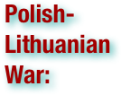

The Polish–Lithuanian War was an armed conflict between newly independent Lithuania and Poland in the aftermath of World War I. The conflict primarily concerned territorial control of the Vilnius Region, including Vilnius, and the Suwałki Region, including the towns of Suwałki, Augustów, and Sejny. The conflict was largely shaped by the progress in the Polish–Soviet War and international efforts to mediate at the Conference of Ambassadors and later the League of Nations. There are major differences in Polish and Lithuanian historiography regarding treatment of the war. According to Lithuanian historians, the war was part of the Lithuanian Wars of Independence and spanned from spring 1919 to November 1920. According to Poland, the war included only fighting over the Suwałki Region in September–October 1920 and was part of the Polish–Soviet War. In April 1919, Poland captured Vilnius and came in contact with the Lithuanian Army fighting in the Lithuanian–Soviet War. Faced with a common enemy, the Polish–Lithuanian relations were not immediately hostile. Poland hoped to persuade Lithuania to join some kind of Polish–Lithuanian union, which Lithuania saw as loss of independence to Polish federalism. As bilateral relations worsened, the Entente drew two demarcation lines in hopes to stall further open hostilities. The lines did not please anyone and were ignored. When a Polish coup against the Lithuanian government failed in August 1919, the front stabilized until summer 1920. In July 1920, Poland was losing the Polish–Soviet War and was in full retreat. The Lithuanians followed retreating Polish troops to secure the territory, assigned to Lithuania by the Soviet–Lithuanian Peace Treaty. The Soviets were the first to enter Vilnius. When Poland achieved a major victory in the Battle of Warsaw and forced the Soviets to retreat in August 1920, Lithuanians defended their new borders. Poland did not recognize the Peace Treaty and claimed that Lithuania had become a Soviet ally. Fighting broke out in the Suwałki Region. During the Battle of the Niemen River, Poland attacked Lithuania on a wide front. The battle drastically altered the military situation and left Vilnius open to an attack. Under pressure from the League of Nations, Poland signed the Suwałki Agreement on October 7, 1920. The agreement drew a new demarcation line, which was incomplete and did not provide protection to Vilnius. On October 8, 1920, Polish general Lucjan Żeligowski staged a mutiny among Polish troops and marched on Vilnius to "defend the right of self-determination of local Poles." The mutiny was planned and authorized by Polish chief of state Józef Piłsudski. Żeligowski's forces captured Vilnius, but further advances were stopped by the Lithuanian troops. Żeligowski proclaimed creation of the Republic of Central Lithuania with capital in Vilnius. On November 29, a ceasefire was signed. The prolonged mediation by the League of Nations did not change the situation and status quo was accepted in 1923. The Republic of Central Lithuania was incorporated into Poland as the Wilno Voivodeship in 1922. Lithuania did not recognize these developments and continued to claim Vilnius as its constitutional capital. There were no diplomatic relations between Poland and Lithuania until the Polish ultimatum of 1938. (wikipedia.org. Accessed August 15-17, 2011.)
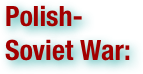

The Polish–Soviet War (February 1919 – March 1921) was an armed conflict with Soviet Russia and Soviet Ukraine pitted against the Second Polish Republic and the Ukrainian People's Republic, four states in post–World War I Europe. Poland, whose statehood had just been re-established by the Treaty of Versailles following the Partitions of Poland in the late 18th century, sought to secure territories it had lost at the time of partitions; the aim of the Soviet states was to control those same territories, which had been part of the Russian Empire until the turbulent events of World War I. On the Soviet part the ideological factor was also very important as the newly created communist state sought to carry on its revolution to the central and later to the Western Europe. This is evidenced by the well-known daily order by marshal Tukhachevsky to his troops: "Over the corpse of Poland leads the road to the world's fire. Towards Wilno, Minsk, Warsaw go!". Despite the final retreat of Russian forces and annihilation of their three field armies the question of victory is not universally agreed on. The Poles claimed a successful defense of their state, while the Soviets claimed a repulse of the Polish eastward invasion of Ukraine and Belarus, which they viewed as a part of the foreign intervention in the Russian Civil War. (wikipedia.org. Accessed August 15-17, 2011.)

The Popular Front was an alliance of left-wing movements, including the French Communist Party (PCF), the French Section of the Workers' International (SFIO) and the Radical and Socialist Party, during the interwar period. It won the May 1936 legislative elections, leading to the formation of a government first headed by SFIO leader Léon Blum and exclusively composed of Radical-Socialist and SFIO ministers. Léon Blum's government lasted from June 1936 to June 1937. He was then replaced by Camille Chautemps, a Radical, but came back as President of the Council in March 1938, before being succeeded by Édouard Daladier, another Radical, the next month. The Popular Front dissolved itself in autumn 1938, confronted by internal dissensions related to the Spanish Civil War (1936–1939), opposition of the right-wing and the persistent effects of the Great Depression. The Popular Front won the May 1936 legislative elections three months after the victory of the Frente Popular in Spain. Headed by Léon Blum, it engaged in various social reforms. The workers' movement welcomed this electoral victory by launching a general strike in May-June 1936, resulting in the negotiation of the Matignon agreements, one of the cornerstone of social rights in France. The socialist movement's euphoria was apparent in SFIO member Marceau Pivert's "Tout est possible!" (Everything is possible). However, as the economy continued to stall during the Great Depression, Blum was forced to stop his reforms and devalue the franc. With the French Senate controlled by conservatives, Blum, and thus the whole Popular Front, fell out of power in June 1937. The Popular Front was supported, without participation (soutien sans participation) by the French Communist Party, which did not provide any of its ministers, just as the SFIO had supported the Cartel des gauches (Coalition of the Left) in 1924 and 1932 without entering the government. Furthermore, it was the first time that the cabinet included female ministers, although women would acquire the right to vote only in 1944. (wikipedia.org. Accessed August 15-17, 2011.)

The 1923 population exchange between Greece and Turkey was based upon religious identity, and involved the Greek Orthodox citizens of Turkey and the Muslim citizens of Greece. It was a major compulsory population exchange, or agreed mutual expulsion. The "Convention Concerning the Exchange of Greek and Turkish Populations" was signed at Lausanne, Switzerland, on the 30th January 1923, by the governments of Greece and Turkey. It involved approximately 2 million people (around 1.5 million Anatolian Greeks and 500,000 Muslims in Greece), most of whom were forcibly made refugees and de jure denaturalized from their homelands. It should be noted that, by January 1923, the vast majority of Asia Minor Greeks had already been driven away violently during the recent Greco-Turkish war, nonetheless, they were taken into account in the convention. According to calculations, during the autumn of 1922, around 900,000 orthodox refugees had arrived in Greece (including 50,000 Armenians). (wikipedia.org. Accessed August 12-14, 2011.)


The Nanking Massacre or Nanjing Massacre, also known as the Rape of Nanking, was a mass murder and war rape that occurred during the six-week period following the Japanese capture of the city of Nanjing (Nanking), the former capital of the Republic of China, on December 13, 1937 during the Second Sino-Japanese War. During this period hundreds of thousands of Chinese civilians and disarmed soldiers were murdered and 20,000–80,000 women were raped by soldiers of the Imperial Japanese Army. The massacre remains a contentious political issue, as various aspects of it have been disputed by some historical revisionists and Japanese nationalists, who have claimed that the massacre has been either exaggerated or wholly fabricated for propaganda purposes. As a result of the nationalist efforts to deny or rationalize the war crimes, the controversy surrounding the massacre remains a stumbling block in Sino-Japanese relations, as well as Japanese relations with other Asia-Pacific nations such as South Korea and the Philippines. An accurate estimation of the death toll in the massacre has not been achieved because most of the Japanese military records on the killings were deliberately destroyed or kept secret shortly after the surrender of Japan in 1945. The International Military Tribunal of the Far East estimates more than 200,000 casualties in the incident; China's official estimate is about 300,000 casualties, based on the evaluation of the Nanjing War Crimes Tribunal. Estimates from Japanese historians vary widely, in the vicinity of 40,000–200,000. Some historical revisionists even deny that a widespread, systematic massacre occurred at all, claiming that any deaths were either justified militarily, accidental or isolated incidents of unauthorized atrocities. These negationists claim that the characterization of the incident as a large-scale, systematic massacre was fabricated for the purpose of political propaganda. Although the Japanese government has admitted the acts of killing of a large number of noncombatants, looting and other violence committed by the Imperial Japanese Army after the fall of Nanking, some Japanese officials have argued that the death toll was military in nature and that no such crimes ever occurred. Denial of the massacre (and a divergent array of revisionist accounts of the killings) has become a staple of Japanese nationalism. In Japan, public opinion of the massacres varies, and few deny the occurrence of the massacre outright. Nonetheless, recurring attempts by negationists to promote a revisionist history of the incident have created controversy that periodically reverberates in the international media, particularly in China, South Korea, and other East Asian nations. (wikipedia.org. Accessed August 15-17, 2011.)

A referendum (also known as a plebiscite or a ballot question) is a direct vote in which an entire electorate is asked to either accept or reject a particular proposal. This may result in the adoption of a new constitution, a constitutional amendment, a law, the recall of an elected official or simply a specific government policy. It is a form of direct democracy. (wikipedia.org. Accessed August 15-17, 2011.)

The Republic of Central Lithuania or Middle Lithuania, or simply Central Lithuania, was a short-lived political entity, which did not gain international recognition. The republic was created in 1920 following the staged rebellion of soldiers of the 1st Lithuanian–Belarusian Infantry Division of the Polish Army under Lucjan Żeligowski, supported by the Polish air force, cavalry and artillery. Centered around the historical capital of the Grand Duchy of Lithuania, Vilna, for eighteen months the entity served as a buffer state between Poland, upon which it depended, and Lithuania, which claimed the area. After a variety of delays, a disputed election took place on January 8, 1922, and the territory was annexed to Poland. The republic was regarded by some as a Poland-dependent puppet state. Initially the Polish government denied that it was responsible for the false flag action that created the entity, but Polish leader, Józef Piłsudski, subsequently acknowledged that he personally ordered Żeligowski to pretend that he was acting as a mutinous Polish officer. The Polish-Lithuanian borders in the interwar period, while recognized by the Conference of Ambassadors of the Entente and the League of Nations, were not recognized by the Republic of Lithuania. In 1931 an international court in The Hague issued the statement that the Polish seizure of the city had been a violation of international law. (wikipedia.org. Accessed August 15-17, 2011.)

The Reichstag fire was an arson attack on the Reichstag building in Berlin on 27 February 1933. The event is seen as pivotal in the establishment of Nazi Germany. At 21:25, a Berlin fire station received an alarm call that the Reichstag building, the assembly location of the German Parliament, was ablaze. The fire started in the Session Chamber, and, by the time the police and firefighters had arrived, the main Chamber of Deputies was engulfed in flames. Inside the building, a thorough search conducted by the police resulted in the finding of Marinus Van der Lubbe. Van der Lubbe, council communist and unemployed bricklayer, had recently arrived in Germany, ostensibly to carry out his political activities. The fire was used as evidence by the Nazis that the Communists were beginning a plot against the German government. Van der Lubbe and four Communist leaders were subsequently arrested. Adolf Hitler, who had been sworn in as Chancellor of Germany four weeks before, on 30 January, urged President Paul von Hindenburg to pass an emergency decree to counter the "ruthless confrontation of the Communist Party of Germany". With civil liberties suspended, the government instituted mass arrests of Communists, including all of the Communist parliamentary delegates. With them gone and their seats empty, the Nazis went from being a plurality party to the majority; subsequent elections confirmed this position and thus allowed Hitler to consolidate his power. Meanwhile, investigation of the Reichstag fire continued, with the Nazis eager to uncover Comintern complicity. In early March 1933, three men were arrested who were to play pivotal roles during the Leipzig Trial, known also as the "Reichstag Fire Trial": Bulgarians Georgi Dimitrov, Vasil Tanev and Blagoi Popov. The Bulgarians were known to the Prussian police as senior Comintern operatives, but the police had no idea how senior they were; Dimitrov was head of all Comintern operations in Western Europe. Historians disagree as to whether Van der Lubbe acted alone or whether the arson was planned and ordered by the Communists or by the Nazis, then dominant in the government themselves, as a false flag operation. The responsibility for the Reichstag fire remains an ongoing topic of debate and research. (wikipedia.org. Accessed August 15-17, 2011.)

The Remilitarization of the Rhineland by the German Army took place on March 7, 1936 when German forces entered the Rhineland. (wikipedia.org. Accessed August 15-17, 2011.)

The Rif War (1920-26), also called the Second Moroccan War, was fought between Spain (later assisted by France) and the Moroccan Rif Berbers. . . Superior manpower and technology soon resolved the course of the war in favour of France and Spain. The French troops pushed through from the south while the Spanish fleet secured Alhucemas Bay by an amphibious landing, and began attacking from the north. After one year of bitter resistance, Abd el-Krim, the leader of both the tribes, surrendered to French authorities, and in 1926 Spanish Morocco was finally retaken. The unpopularity of the war in Spain, however, and the humiliating initial failures of the Spanish military, contributed to the instability of the Spanish government and the military coup of 1923. (wikipedia.org. Accessed August 15-17, 2011.)

The Roaring Twenties is a phrase used to describe the 1920s, principally in North America, but also in London, Berlin and Paris for a period of sustained economic prosperity. The phrase was meant to emphasize the period's social, artistic, and cultural dynamism. 'Normalcy' returned to politics in the wake of World War I, jazz music blossomed, the flapper redefined modern womanhood, Art Deco peaked, and finally the Wall Street Crash of 1929 served to punctuate the end of the era, as The Great Depression set in. The era was further distinguished by several inventions and discoveries of far-reaching importance, unprecedented industrial growth, accelerated consumer demand and aspirations, and significant changes in lifestyle and culture. The social and cultural features known as the Roaring Twenties began in leading metropolitan centers, especially Chicago, New Orleans, New York, Philadelphia, Paris and London, then spread widely in the aftermath of World War I. The United States gained dominance in world finance. Thus when Germany could no longer afford war reparations to Britain, France and other Allies, the Americans came up with the Dawes Plan and Wall Street invested heavily in Germany, which repaid its reparations to nations that in turn used the dollars to pay off their war debts to Washington. By the middle of the decade, prosperity was widespread. The second half of the decade becoming known as the "Golden Twenties". In France and francophone Canada, they were also called the "années folles" ("Crazy Years"). The spirit of the Roaring Twenties was marked by a general feeling of discontinuity associated with modernity, a break with traditions. Everything seemed to be feasible through modern technology. New technologies, especially automobiles, moving pictures and radio proliferated 'modernity' to a large part of the population. Formal decorative frills were shed in favor of practicality in both daily life and architecture. At the same time, jazz and dancing rose in popularity, in opposition to the mood of the specter of World War I. As such, the period is also often referred to as the Jazz Age. (wikipedia.org. Accessed August 15-17, 2011.)
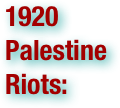
.pdf (. . . )


The 1920 Palestine riots, or Nabi Musa riots, took place in British Mandate of Palestine April 4–7, 1920 in and around the Old City of Jerusalem. The events coincided with and are named after the Christian/Muslim Easter holiday Nabi Musa and followed rising tensions in Arab-Jewish relations over the implications of Zionist immigration, tensions which coincided with attacks on outlying Jewish settlements in the Galilee. Speeches by Arab religious leaders during the festival, in which traditionally large numbers of Muslims gathered for a religious procession, led to a serious outbreak of violent assaults on the city's Jews, with five Jews killed and hundreds wounded. The British military administration's erratic response failed to contain the rioting, which continued for four days. As a result of the events, trust between the British, Jews, and Arabs eroded. One consequence was that the Jewish community increased moves towards an autonomous infrastructure and security apparatus parallel to that of the British administration. (wikipedia.org. Accessed August 15-17, 2011.)
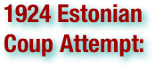

The Attempted coup of 1924 in Estonia conducted by Comintern was a failed coup attempt in Estonia staged by Communists (mostly infiltrated from Soviet Union) on December 1, 1924. Of the 279 actively participating communists, 125 were killed in action, later more than 500 people were arrested. The government forces lost 26 men. During the Soviet occupation of Estonia from 1940 until the era of Perestroika and Glasnost in the Soviet history of the Estonian SSR the communist coup attempt was referred to as Tallinn Uprising of December 1, 1924 against the Yoke of the National Bourgeoisie Government of Estonia and described as an event in the series of World revolution. (wikipedia.org. Accessed August 15-17, 2011.)

The 1926 general strike in the United Kingdom was a general strike that lasted nine days, from 4 May 1926 to 13 May 1926. It was called by the general council of the Trades Union Congress (TUC) in an unsuccessful attempt to force the British government to act to prevent wage reduction and worsening conditions for coal miners. . . The effect on the British coal-mining industry was profound. By the late 1930s, employment in mining had fallen by more than one-third from its pre-strike peak of 1.2 million miners, but productivity had rebounded from under 200 tons produced per miner to over 300 tons by the outbreak of the Second World War. The Trade Disputes and Trade Unions Act of 1927, among other things, forbade sympathetic strikes and mass picketing. (wikipedia.org. Accessed August 15-17, 2011.)
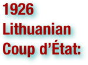

The 1926 Lithuanian coup d'état was a military coup d'etat in Lithuania that resulted in the replacement of the democratically elected government with a conservative authoritarian government led by Antanas Smetona. The coup took place on December 17, 1926 and was largely organized by the military; Smetona's role remains the subject of debate. The coup brought the Lithuanian National Union, the most conservative party at the time, to power. Before 1926, it had been a fairly new and insignificant nationalistic party: in 1926, its membership numbered about 2,000 and it had won only three seats in the parliamentary elections. The Lithuanian Christian Democrats, the largest party in the Seimas at the time, collaborated with the military and provided constitutional legitimacy to the coup, but did not accept any major posts in the new government and withdrew in May 1927. After the military handed power over to the civilian government, it ceased playing a direct role in political life. Smetona and his party, however, remained in power until 1940, when Lithuania was occupied by the Soviet Union. (wikipedia.org. Accessed August 15-17, 2011.)


The 1929 Palestine riots, also known as the Western Wall Uprising, the 1929 Massacres, or the Buraq Uprising, refers to a series of demonstrations and riots in late August 1929 when a long-running dispute between Muslims and Jews over access to the Western Wall in Jerusalem escalated into violence. During the week of riots 116 Arabs and 133 Jews were killed and 232 Arabs and 198 Jews were injured and treated in hospital. According to the official report, "many of the Arab casualties and possibly some of the Jewish casualties were caused by rifle fire by the police or military forces". (wikipedia.org. Accessed August 15-17, 2011.)

The 1936–1939 Arab revolt in Palestine or Great Arab Revolt was a nationalist uprising by Palestinian Arabs in Mandate Palestine against British colonial rule and mass Jewish immigration. On 19 April, 1936, Arab riots broke out in Jaffa, and after two days unrest, between 9 and 16 Jews were killed, as many as 5 Arabs, many more wounded, and a curfew imposed. The organized program of the revolt that followed, consisted of two distinct phases, according to Norris. The first phase was directed primarily by the urban and elitist Higher Arab Committee (HAC) and was focused mainly around strikes and other forms of political protest, although violence was also directed at Jewish settlements. By October 1936 this phase had been defeated by the British civil administration using a combination of political concessions, international diplomacy (involving the rulers of Iraq, Saudi Arabia, Transjordan and Yemen) and the threat of martial law. The second phase, which began late in 1937, was a violent and movement that increasingly targeted British forces and Jews. During this phase the rebellion was suppressed by the British Army and the Palestine Police Force using measures that were intended to intimidate the Arab population and undermine popular support for the revolt. According to official British figures covering the whole revolt, the army and police killed more than 2,000 Arabs in combat, 108 were hanged, and 961 died because of ‘gang and terrorist activities’. In an analysis of the British statistics Walid Khalidi estimates 19,792 casualties for the Arabs, with 5,032 dead: 3,832 killed by the British and 1,200 dead because of ‘terrorism’, and 14,760 wounded. Over ten percent of the adult male Palestinian Arab population between 20 and 60 was killed, wounded, imprisoned or exiled. Estimates of the number of Palestinian Jews killed range from 91 to 'several hundred'. Although the 1936–1939 Arab revolt in Palestine was unsuccessful, its consequences affected the outcome of the 1948 Arab-Israeli war. (wikipedia.org. Accessed August 15-17, 2011.)
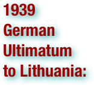

1939 German ultimatum to Lithuania was an oral ultimatum presented to Juozas Urbšys, Foreign Minister of Lithuania, by Joachim von Ribbentrop, Foreign Minister of Nazi Germany, on March 20, 1939. The Germans demanded that Lithuania give up the Klaipėda Region (also known as the Memel Territory), which had been detached from Germany after World War I, or the Wehrmacht would invade Lithuania. After years of rising tension between Lithuania and Germany, increasing pro-Nazi propaganda in the region, and continued German expansion, the demand was expected. The ultimatum was issued just five days after the Nazi occupation of Czechoslovakia. The four signatories of the 1924 Klaipėda Convention, which had guaranteed the protection of the status quo in the region, did not offer any material assistance. The United Kingdom and France followed a policy of appeasement, while Italy and Japan openly supported Germany. Lithuania was forced to accept the ultimatum on March 22. For Germany it was the last territorial acquisition before World War II; for Lithuania it was a major downturn in economy and morale; for Europe it was further escalation in pre-war tensions. (wikipedia.org. Accessed August 15-17, 2011.)

The February 26 incident was an attempted coup d'état in Japan, from February 26 to 29, 1936 carried out by 1,483 troops of the Imperial Japanese Army. Several leading politicians were killed and the center of Tokyo was briefly occupied by the rebelling troops. At that time, the incident was called the deplorable incident in the capital. (wikipedia.org. Accessed August 15-17, 2011.)

The 4th of August Regime, commonly also known as the Metaxas Regime, was an authoritarian regime under the leadership of General Ioannis Metaxas that ruled Greece from 1936 to 1941. There is some debate over how the regime relates to other authoritarian regimes of the era: those of Franco's Spain, Italian Fascism, and German Nazism. Richard Clogg argues that while the regime had "superficial trappings of Fascism" and Metaxas "did not disguise his admiration for Nazism and Fascism", it is "more correctly categorized as paternalist-authoritarian rather than fascist". (wikipedia.org. Accessed August 15-17, 2011.)

The Abyssinia Crisis was a diplomatic crisis during the interwar period originating in the "Walwal incident." This incident resulted from the ongoing conflict between the Kingdom of Italy (Regno d'Italia) and the Empire of Ethiopia (then commonly known as "Abyssinia" in Europe). Its effects were to undermine the credibility of the League of Nations and to encourage Fascist Italy to ally itself with Nazi Germany. The crisis brought an end to peace in Europe and it was clear by 1937 there were two defining sides in Europe. (wikipedia.org. Accessed August 15-17, 2011.)
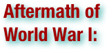

The fighting in World War I ended in western Europe when the Armistice took effect at 11:00 am GMT on November 11, 1918, and in eastern Europe by the early 1920s. During and in the aftermath of the war the political, cultural, and social order was drastically changed in Europe, Asia and Africa, even outside the areas directly involved in the war. New countries were formed, old ones were abolished, international organizations were established, and many new and old ideologies took a firm hold in people's minds. (wikipedia.org. Accessed August 12-14, 2011.)

The Imperial Territory of Alsace-Lorraine was a territory created by the German Empire in 1871 after it annexed most of Alsace and the Moselle region of Lorraine following its victory in the Franco-Prussian War. . . French troops entered Alsace-Lorraine in November 1918 at the end of the World War I; the territory reverted to France at the Treaty of Versailles of 1919. The area was de facto annexed by Nazi Germany in 1940 (although no official de jure annexation took place). It reverted to France in 1944-1945 at the end of World War II with the defeat of Germany and it has remained a part of France since. (wikipedia.org. Accessed August 12-14, 2011.)
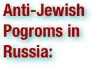

The term pogrom as a reference to large-scale, targeted, and repeated antisemitic rioting saw its first use in the 19th century. . . Many pogroms accompanied the post-1917 period of the Russian Civil War: an estimated 70,000 to 250,000 civilian Jews were killed throughout the formerRussian Empire; the number of Jewish orphans exceeded 300,000. In his book 200 Years Together, Aleksandr Solzhenitsyn provides these numbers from Nahum Gergel's 1951 study of the pogroms in Ukraine: out of an estimated 1,236 incidents of anti-Jewish violence, 887 mass pogroms occurred, the remainder being classified as "excesses" not assuming mass proportions. Of these incidents, about 40% were perpetrated by the Ukrainian forces led by Symon Petliura, 25% by the Ukrainian Green Army and various Ukrainian nationalist gangs, 17% by the White Army, especially the forces of Anton Denikin. A further 8.5% of Gergel's total figure is attributed to pogroms carried out by soldiers assigned to the Red Army - although the Red Army pogroms were not sanctioned by the Red Army leadership, and where Red Army troops had perpetrated pogroms, the Bolshevik high command subsequently disarmed entire regiments and individual pogromists were court-martialed and executed to deter further outbreaks. (wikipedia.org. Accessed August 12-14, 2011.)

The Anschluss (German for "link-up"), also known as the Anschluss Österreichs, was the occupation and annexation of Austria into Nazi Germany in 1938. Austria was annexed into the German Third Reich on 12 March 1938. There had been several years of pressure by supporters from both countries Austria and Germany for the "Heim ins Reich"-movement, from both Nazis and non-Nazis. Earlier, Nazi Germany had provided support for the Austrian National Socialist Party (Austrian Nazi Party) in its bid to seize power from Austria's Austrofascist leadership. Devoted to remaining independent but under considerable pressure from both German and Austrian Nazis, Austria's Chancellor Kurt Schuschnigg tried to hold a referendum for a vote on the issue. Although Schuschnigg expected Austria to vote in favor of maintaining autonomy, a well-planned coup d'état by the Austrian Nazi Party of Austria's state institutions in Vienna took place on 11 March, prior to the referendum, which they cancelled. They transferred power to Germany, and Wehrmacht troops entered Austria to enforce the Anschluss. The Nazis held a plebiscite within the following month – asking the people to ratify the fait accompli. They claimed to have received 99.73% of the vote in favor. Although the Allies were committed to upholding the terms of the treaties of Versailles and St. Germain, which specifically prohibited the union of Austria and Germany, their reaction was only verbal and moderate. No fighting ever took place and even the strongest voices against the annexation, particularly Fascist Italy, France and the United Kingdom (the "Stresa Front") remained at peace. The Anschluss was among the first major steps in Adolf Hitler's creation of an empire including German-speaking lands and territories which Germany had lost afterWorld War I, although Austria had never been a part of the (in 20th-century terms) German state. Prior to the 1938 annexation, Germany had remilitarized the Rhineland, and the Saar region was returned to Germany after 15 years of occupation through a plebiscite. After the Anschluss, Germany targeted Czechoslovakia, provoking an international crisis which led to the Munich Agreement in September 1938, giving the Third Reich control of the industrial Sudetenland, which had a predominantly ethnic German population. In March 1939, Hitler then invaded truncated Czechoslovakia and made the rest of the nation a protectorate. That same year, Memelland was returned from Lithuania. Austria ceased to exist as a fully-independent nation until late 1945. A Provisional Austrian Government was set up on 27 April 1945, and was legally recognized by the Allies in the following months. It was not until 1955 that Austria regained full sovereignty. (wikipedia.org. Accessed August 15-17, 2011.)

The term appeasement is commonly understood to refer to a diplomatic policy aimed at avoiding war by making concessions to another power. It has been described as "...the policy of settling international quarrels by admitting and satisfying grievances through rational negotiation and compromise, thereby avoiding the resort to an armed conflict which would be expensive, bloody, and possibly dangerous." It was used by European democracies in the 1930s who wished to avoid war with the dictatorships of Germany and Italy, bearing in mind the horrors of the First World War. The term is most often applied to the foreign policy of British Prime Minister Neville Chamberlain towards Nazi Germany between 1937 and 1939. His policies of avoiding war with Germany have been the subject of intense debate for seventy years among academics, politicians and diplomats. The historian's assessment of Chamberlain has ranged from condemnation for allowing Hitler to grow too strong, to the judgement that he had no alternative and acted in Britain's best interests. At the time, these concessions were widely seen as positive, and the Munich Pact among Germany, Great Britain, France and Italy prompted Chamberlain to announce that he had secured "peace for our time". The word "appeasement" has been used as a synonym for weakness and even cowardice since the 1930s, and it is still used in that sense today as a justification for firm, often armed, action in international relations. (wikipedia.org. Accessed August 15-17, 2011.)


The Armenian Genocide—also known as the Armenian Holocaust, the Armenian Massacres and, by Armenians, as the Great Crime—refers to the deliberate and systematic destruction of theArmenian population of the Ottoman Empire during and just after World War I. It was implemented through wholesale massacres and deportations, with the deportations consisting of forced marches under conditions designed to lead to the death of the deportees. The total number of resulting Armenian deaths is generally held to have been between 1 million and 1.5 million. Other ethnic groups were similarly attacked by the Ottoman Empire during this period, including Assyrians and Greeks, and some scholars consider those events to be part of the same policy of extermination. It is widely acknowledged to have been one of the first modern genocides, as scholars point to the systematic, organized manner in which the killings were carried out to eliminate the Armenians, and it is the second most-studied case of genocide after the Holocaust. The word genocide was coined in order to describe these events. The starting date of the genocide is conventionally held to be April 24, 1915, the day that Ottoman authorities arrested some 250 Armenian intellectuals and community leaders in Constantinople. Thereafter, the Ottoman military uprooted Armenians from their homes and forced them to march for hundreds of miles, depriving them of food and water, to the desert of what is now Syria. Massacres were indiscriminate of age or gender, with rape and other sexual abuse commonplace. The majority of Armenian diaspora communities were founded as a result of the Armenian genocide. The Republic of Turkey, one of the successor states of the Ottoman Empire, denies the word genocide is an accurate description of the events (see Denial of the Armenian Genocide). In recent years, it has faced repeated calls to accept the events as genocide. To date, twenty countries have officially recognized the events of the period as genocide, and most genocide scholars and historians accept this view. (wikipedia.org. Accessed August 12-14, 2011.)


The armistice between the Allies and Germany was an agreement that ended the fighting in the First World War. It was signed in a railway carriage in Compiègne Forest on 11 November 1918, and marked a victory for the Allies and a complete defeat for Germany, although not technically a surrender. The Germans were responding to the policies proposed by American President Woodrow Wilson in his Fourteen Points. The actual terms, largely written by French Marshal Ferdinand Foch, included the cessation of hostilities, the withdrawal of German troops to behind their own borders, the preservation of infrastructure, the exchange of prisoners, a promise of reparations, the disposition of German warships and submarines, and conditions for prolonging or terminating the armistice. . . the cessation of hostilities on the Western Front . . . took effect at eleven o'clock in the morning—the "eleventh hour of the eleventh day of the eleventh month" of 1918. While this official date to mark the end of the war reflects the cease fire on the Western Front, hostilities continued in other regions, especially across the former Russian Empire and in parts of the old Ottoman Empire. (wikipedia.org. Accessed August 12-14, 2011.)

A cross whose arms end in arrowheads is called a "cross barby" or "cross barbee" in the traditional terminology of heraldry. In Christian use, the ends of this cross resemble the barbs of fish hooks, or fish spears. This alludes to the Ichthys symbol of Christ, and is suggestive of the "fishers of men" theme in the Gospel. In modern use, the symbol has become associated with extremist right wing organizations after the Arrow Cross symbol was used in Hungary in the 1930s and 1940s as the symbol of a Hungarian National Socialist political party, the Arrow Cross Party. The symbol consists of two green double-ended arrows in a cross configuration on a white circular background, much like the German Nazi swastika. The arrow cross symbol remains outlawed in Hungary. A similar symbol, the Crosstar, is now used by the Nationalist Movement, a white supremacist group based in the United States. Both are basically the arrow cross symbol. (wikipedia.org. Accessed August 15-17, 2011.)
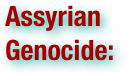

The Assyrian Genocide refers to the mass slaughter of the Assyrian/Chaldean/Syriac population of the Ottoman Empire during the First World War. The Assyrian population of northern Mesopotamia (the Tur Abdin, Hakkari, Van, Siirt regions of present-day southeastern Turkey and the Urmia region of northwestern Iran) was forcibly relocated and massacred by Ottoman (Turkish) and Kurdish forces between 1914 and 1920. Estimates on the overall death toll have varied. Contemporary reports placed the figure at 270,000. More recent estimates have revised that figure to as between 500,000 and 750,000. The Assyrian genocide took place in the same context as the Armenian and Pontic Greek genocides. In these events, close to three million Christians of Syriac, Armenian or Greek Orthodox denomination were murdered by theYoung Turks regime. Since the "Assyrian genocide" took place within the context of the much more widespread Armenian genocide, historical scholarship treating it as a separate event is scarce. In 2007, the International Association of Genocide Scholars reached a consensus that "the Ottoman campaign against Christian minorities of the Empire between 1914 and 1923 constituted a genocide against Armenians, Assyrians, and Pontian and Anatolian Greeks." The President of Genocide Watch endorsed the "repudiation by the world's leading genocide scholars of the Turkish government's ninety-year denial of the Ottoman Empire's genocides against its Christian populations, including Assyrians, Greeks, and Armenians." (wikipedia.org. Accessed August 12-14, 2011.)
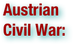

The Austrian Civil War, also known as the February Uprising, is a term sometimes used for a few days of skirmishes between socialist and conservative-fascist forces between 12 February and 16 February 1934, in Austria. The clashes started in Linz and took place principally in the cities of Vienna, Graz, Bruck an der Mur, Judenburg, Wiener Neustadt and Steyr, but also in some other industrial cities of eastern and central Austria. . . Several hundred people (including paramilitaries, members of the security forces and civilians) died in the armed conflict; more than a thousand suffered wounds. The authorities tried and executed nine Schutzbund leaders under the provisions of martial law. In addition, over 1,500 arrests were made. Leading socialist politicians, such as Otto Bauer, were forced into exile.The incidents of February 1934 were taken as a pretext by the government to prohibit the Social Democratic Party and its affiliated trade unions altogether. In May, the conservatives replaced the democratic constitution by a corporatist constitution modeled along the lines of Benito Mussolini's fascist Italy; therefore the socialists coined the term Austrofascism although the underlying ideology was essentially that of the most conservative elements in the Austrian Catholic clergy, a feature inconsistent with both Italian Fascism and Nazism. The Patriotic Front, into which the Heimwehr and the Christian Social Party were merged, became the only legal political party in the resulting authoritarian regime, the Ständestaat. (wikipedia.org. Accessed August 15-17, 2011.)

Austrofascism is a term which is frequently used by historians to describe the authoritarian rule installed in Austria with the May Constitution of 1934, which ceased with the forcible incorporation of the newly-founded Federal State of Austria into Nazi Germany in 1938. It was based on a ruling party, the Fatherland Front (Vaterländische Front) and the Heimwehr (Home Guard) paramilitary militia. Leaders were Engelbert Dollfuss and, after Dollfuss' assassination, Kurt Schuschnigg, who originally were politicians of the Christian Social Party, which was quickly integrated into the new movement. (wikipedia.org. Accessed August 15-17, 2011.)

The Balkan Pact was a treaty signed by Greece, Turkey, Romania and Yugoslavia on February 9, 1934, aimed at maintaining the geopolitical status quo in the region following World War I. The signatories agreed to suspend all disputed territorial claims against each other and their immediate neighbors following the aftermath of the war and a rise in various regional ethnic minority tensions. Other nations in the region that had been involved in related diplomacy refused to sign the document, including Italy, Albania, Bulgaria, Hungary, and the Soviet Union. Non-signatories were mostly those governments with territorial expansion in mind. The pact became effective on the day it was signed. It was registered in League of Nations Treaty Series on October 1, 1934. The Balkan Pact helped to ensure peace between Turkey and the independent countries in southeastern Europe that had been part of the Ottoman Empire, most importantly Greece, but failed to stem regional intrigue that encouraged military intervention by Germany, Britain, and the Soviet Union during the Second World War. (wikipedia.org. Accessed August 15-17, 2011.)
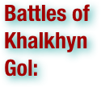

The Battles of Khalkhyn Gol was the decisive engagement of the undeclared Soviet–Japanese Border Wars fought among the Soviet Union, Mongolia and the Empire of Japan in 1939. The conflict was named after the river Khalkhyn Gol, which passes through the battlefield. In Japan, the decisive battle of the conflict is known as the Nomonhan Incident after a nearby village on the border between Mongolia and Manchuria. The battles resulted in total defeat for the Japanese Sixth Army. (wikipedia.org. Accessed August 15-17, 2011.)
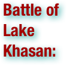

The Battle of Lake Khasan (July 29, 1938 – August 11, 1938) and also known as the Changkufeng Incident in China and Japan, was an attempted military incursion of Manchukuo (Japanese) into the territory claimed by the Soviet Union. This incursion was founded in the beliefs of the Japanese side that the Soviet Union misinterpreted the demarcation of the boundary based on the Treaty of Peking between Imperial Russia and the Manchu Empire (and subsequent supplementary agreements on demarcation), and furthermore, that the demarcation markers were tampered with. . . The Japanese military, while taking the lesson seriously, was willing to engage with the Soviets once more, in the more extensive Battle of Khalkhin Gol (Nomonhan) in the Soviet-Japanese Border War of 1939. The Soviet losses were blamed on the incompetence of Vasily Blücher. On October 22 he was arrested by the NKVD and later tortured to death. (wikipedia.org. Accessed August 15-17, 2011.)


The Beer Hall Putsch (also known as the Munich Putsch but, in German, referred to as the Hitlerputsch or the Hitler-Ludendorff-Putsch) was a failed attempt at revolution that occurred between the evening of 8 November and the early afternoon of 9 November 1923, when Nazi Party leader Adolf Hitler, Generalquartiermeister Erich Ludendorff, and other heads of the Kampfbund unsuccessfully tried to seize power in Munich, Bavaria and Germany. Putsch is the German word for a military coup d'état. (wikipedia.org. Accessed August 15-17, 2011.)


The Blackshirts were Fascist paramilitary groups in Italy during the period immediately following World War I and until the end of World War II. Blackshirts were officially known as the Voluntary Militia for National Security (Milizia Volontaria per la Sicurezza Nazionale, or MVSN). The term was later applied to a similar group serving the British Union of Fascists before World War II, to the SS in Nazi Germany, and to members of a quasi-political organization in India. Inspired by the military prowess and black uniforms of the Arditi, Italy's elite storm troops of World War I, the Fascist Blackshirts were organized by Benito Mussolini as the military tool of his political movement. The founders of the paramilitary groups were nationalist intellectuals, former army officers and young landowners opposing peasants' and country laborers' unions. Their methods became harsher as Mussolini's power grew, and they used violence and intimidation against Mussolini's opponents. (wikipedia.org. Accessed August 15-17, 2011.)


The Army Comrades Association (ACA), later named the National Guard and better known by the nickname The Blueshirts, was a right-wing Irish political organisation active in the 1930s. The Blueshirts are sometimes described as "quasi-fascist", and the extent to which they can be seen as the Irish equivalent of Hitler's Brownshirts and Mussolini's Blackshirts continues to be debated. They employed paramilitary-style uniforms, greeted each other with the Roman salute, and participated in street fights against the IRA. However some historians have argued that the members of the Blueshirts, generally speaking: shared an opposition to the Irish Republican Army, the governing Fianna Fáil party, and contemporary economic policies, rather than a fascist ideology; were defensive rather than offensive in outlook, and; unlike their counterparts in other countries, were not known to engage in political terrorism. (wikipedia.org. Accessed August 15-17, 2011.)


The British Empire comprised the dominions, colonies, protectorates, mandates, and other territories ruled or administered by the United Kingdom. It originated with the overseas colonies and trading posts established by England in the late 16th and early 17th centuries. At its height it was the largest empire in history and, for over a century, was the foremost global power. By 1922 the British Empire held sway over about 458 million people, one-quarter of the world's population at the time, and covered more than 33,700,000 km2 (13,012,000 sq. mi), almost a quarter of the Earth's total land area. As a result, its political, linguistic and cultural legacy is widespread. At the peak of its power, it was often said that "the sun never sets on the British Empire" because its span across the globe ensured that the sun was always shining on at least one of its numerous territories. (wikipedia.org. Accessed August 12-14, 2011.)

The British Mandate of Mesopotamia was a League of Nations Class A mandate under Article 22 and entrusted to Britain when the Ottoman Empire was divided in August 1920 by the Treaty of Sèvres following World War I. This award was prepared on April 25, 1920, at the San Remo conference in Italy. France controlled the Mandates of Lebanon and Syria. Faisal ibn Husayn, who had been proclaimed King of Syria by a Syrian National Congress in Damascus in March 1920, was ejected by the French in July of the same year. The civil government of postwar Iraq was headed originally by the High Commissioner, Sir Percy Cox, and his deputy, Colonel Arnold Wilson. British reprisals after the murder of a British officer in Najaf failed to restore order. British administration had yet to be established in the mountains of north Iraq. The most striking problem facing the British was the growing anger of the nationalists, who felt betrayed at being accorded mandate status. (wikipedia.org. Accessed August 15-17, 2011.)
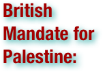

The British Mandate for Palestine, also known as the Palestine Mandate and The British Mandate of Palestine, was a legal commission for the administration of Palestine, the draft of which was formally confirmed by the Council of the League of Nations on 24 July 1922 and which came into effect on 26 September 1923. The document was based on the principles contained in Article 22 of the draft Covenant of the League of Nations and the San Remo Resolution of 25 April 1920 by the principal Allied and associated powers after the First World War. The mandate formalized British rule in the southern part of Ottoman Syria from 1923–1948. With the League of Nations' consent on 16 September 1922, the UK divided the Mandate territory into two administrative areas, Palestine, under direct British rule, and autonomous Transjordan, under the rule of the Hashemite family from the Kingdom of Hejaz in present-day Saudi Arabia, in accordance with the McMahon Correspondence of 1915. Following the 1922 Transjordan memorandum, the area east of the Jordan river became exempt from the Mandate provisions concerning the Jewish National Home. . . The preamble of the mandate declared: "Whereas the Principal Allied Powers have also agreed that the Mandatory should be responsible for putting into effect the declaration originally made on November 2nd, 1917, by the Government of His Britannic Majesty, and adopted by the said Powers, in favor of the establishment in Palestine of a national home for the Jewish people, it being clearly understood that nothing should be done which might prejudice the civil and religious rights of existing non-Jewish communities in Palestine, or the rights and political status enjoyed by Jews in any other country." The formal objective of the League of Nations Mandate system was to administer parts of the defunct Ottoman Empire, which had been in control of the Middle East since the 16th century, "until such time as they are able to stand alone." (wikipedia.org. Accessed August 15-17, 2011.)

British Somaliland was a British protectorate in the northern part of present-day Somalia. For much of its existence, British Somaliland was bordered by French Somaliland, Ethiopia, and Italian Somaliland. From 1940 to 1941, it was occupied by the Italians and was part of Italian East Africa. The protectorate briefly obtained independence on July 1, 1960 as the State of Somaliland before uniting as scheduled later the same week with the Trust Territory of Somalia (the former Italian Somaliland) to form the Somali Republic. The government of Somaliland, a self-declared sovereign state that is internationally recognized as an autonomous region of Somalia, regards the territory as the successor state to the State of Somaliland. (wikipedia.org. Accessed August 15-17, 2011.)

The British Union (BU) was a political party in the United Kingdom formed in 1932 by Sir Oswald Mosley as the British Union of Fascists, in 1936 it changed its name to the British Union of Fascists and National Socialists and then in 1937 to simply the British Union. It existed until 1940, when it was proscribed by the authorities. (wikipedia.org. Accessed August 15-17, 2011.)

The Sturmabteilung (SA . . . English: Stormtroopers) functioned as a paramilitary organization of the German Nazi Party. It played a key role in Adolf Hitler's rise to power in the 1920s and 1930s. SA men were often called "brownshirts" for the colour of their uniforms (similar to Benito Mussolini's blackshirts). The SA was the first Nazi paramilitary group to develop pseudo-military titles for bestowal upon its members. The SA ranks were adopted by several other Nazi Party groups, chief amongst them the SS, itself originally a branch of the SA. Brown-colored shirts were chosen as the SA uniform because a large batch of them were cheaply available after World War I, having originally been ordered during the war for colonial troops posted to Germany's former African colonies. The SA became largely irrelevant after Adolf Hitler ordered the "Blood Purge" of 1934. This event became known as the Night of the Long Knives. The SA was effectively superseded by the SS, though never formally dissolved. (wikipedia.org. Accessed August 15-17, 2011.)

The Bulgarian coup d'état of 1923, also known as the 9 June coup d'état, was a coup d'état in Bulgaria implemented by armed forces under General Ivan Valkov's Military Union on the eve of 9 June 1923. Hestitantly legitimated by a decree of Tsar Boris III of Bulgaria, it overthrew the government of the Bulgarian Agrarian National Union headed by Aleksandar Stamboliyski and replaced it with one under Aleksandar Tsankov. In several places, the coup met with the opposition of agrarian activists and individual communist volunteers, an event known in Bulgarian historiography as the June Uprising. The uprising was largely unorganized in its essence, lacking a common leadership and a nation-wide radius of action. Despite large-scale revolutionary activity by the rebels around Pleven (which they managed to capture), Pazardzhik and Shumen, it was quickly crushed by the new government. The Bulgarian Communist Party did not take part in the June Uprising, as it regarded both the uprising and the coup as "struggle for power between the urban and rural bourgeoisie". The party preferred a stance of neutrality; however, under Comintern pressure, it organized the unsuccessful September Uprising later in 1923. (wikipedia.org. Accessed August 15-17, 2011.)

The Chaco War (1932–1935) was fought between Bolivia and Paraguay over control of the northern part of the Gran Chaco region (the Chaco Boreal) of South America, which was incorrectly thought to be rich in oil. It is also known as La Guerra de la Sed (Spanish for "War of Thirst") for being fought in the semi-arid Chaco. It was the bloodiest military conflict fought in South America during the 20th century. The war pitted two of South America's poorest countries, both having previously lost territories to neighbors in 19th century wars. During the war both countries faced difficulties in obtaining arms and other supplies since their landlocked situation made their foreign trade and arms purchases dependent on the willingness of neighboring countries to let them pass by. In particular Bolivia faced external trade problems coupled with poor internal communications. While Bolivia had income from lucrative mining and a better equipped and larger army than Paraguay, a series of factors turned the tide in favor of Paraguay which came by the end of the war to control most of the disputed zone, and was finally also granted the largest portion of the disputed territories in the peace treaties. (wikipedia.org. Accessed August 15-17, 2011.)

The Communist International, abbreviated as Comintern, also known as the Third International, (1919–1943) was an international communist organization initiated in Moscow during March 1919. The International intended to fight "by all available means, including armed force, for the overthrow of the international bourgeoisie and for the creation of an international Soviet republic as a transition stage to the complete abolition of the State." The Comintern was founded after the 1915 Zimmerwald Conference in which Vladimir Lenin had organized the "Zimmerwald Left" against those who refused to approve any statement explicitly endorsing socialist revolutionary action, and after the 1916 dissolution of the Second International. The Comintern had seven World Congresses between 1919 and 1935. It also had thirteen "Enlarged Plenums" of its governing Executive Committee, which had much the same function as the somewhat larger and more grandiose Congresses. The Comintern was officially dissolved during 1943. (wikipedia.org. Accessed August 15-17, 2011.)

The Corfu Incident was a 1923 diplomatic crisis between the Kingdom of Greece and the Kingdom of Italy. . . On August 27, in 1923 the Italian general, Enrico Tellini, and three of his assistants were murdered by unknown assailants at Kakavia within Greek territory. . . Italy sent an ultimatum to Greece on August 29, 1923, demanding 50 million lire in reparations and execution of the killers. Greece was unable to identify the killers, so Italian forces bombarded and occupied the Greek island of Corfu on August 31, 1923, killing at least fifteen civilians. The ulterior motive for the invasion was Corfu's strategic position at the entrance of the Adriatic Sea.. . Greece appealed to the League of Nations, which initially condemned the Italian occupation. The dispute was handed over to the Conference of Ambassadors, and Italy and Greece agreed to be bound by its decision. The Conference largely followed the nominal Italian demands, ordering Greece to apologize and pay reparations, a decision that Greece accepted. Italian forces left Corfu on September 27, 1923.
(wikipedia.org. Accessed August 15-17, 2011.)

The Cristero War (also known as the Cristiada) of 1926 to 1929 was an uprising and counter-revolution against the Mexican government of the time, set off by religious persecution of Christians, especially Roman Catholics, and specifically the strict enforcement of the anti-clerical provisions of the Mexican Constitution of 1917 and the expansion of further anti-clerical laws. After a period of peaceful resistance, a number of skirmishes took place in 1926. The formal rebellions began on January 2, 1927, with the rebels calling themselves Cristeros because they felt they were fighting for Christ himself. Just as the Cristeros began to hold their own against the federal forces, the rebellion was ended by diplomatic means, brokered by the US Ambassador Dwight Whitney Morrow. (wikipedia.org. Accessed August 15-17, 2011.)

The Enabling Act was passed by Germany's Reichstag and signed by President Paul von Hindenburg on 23 March 1933. It was the second major step, after the Reichstag Fire Decree, through which Chancellor Adolf Hitler legally obtained plenary powers and established his dictatorship. It received its name from its legal status as an enabling act granting the Cabinet the authority to enact laws without the participation of the Reichstag. The act stated that it was to last for four years unless renewed by the Reichstag, which occurred twice. The formal name of the Enabling Act was Gesetz zur Behebung der Not von Volk und Reich ("Law to Remedy the Distress of People and Reich"). (wikipedia.org. Accessed August 15-17, 2011.)

The Estonian War of Independence, also known as the Estonian Liberation War, was a defensive campaign of the Estonian Army and its allies, most notably the White Russian Northwestern Army, Latvia, and the United Kingdom, against the Soviet Western Front offensive and the offensives of the German VI Reserve Corps in 1918–1920 in connection with the Russian Civil War. The campaign was the struggle of the Republic of Estonia for sovereignty in the aftermath of World War I. It resulted in a victory for Estonia and was concluded in the Treaty of Tartu. (wikipedia.org. Accessed August 15-17, 2011.)

The European Civil War is a term that is to characterize both World War I and World War II and the inter-war period as a protracted civil war taking place in Europe. It is used in referring to the repeated confrontations that occurred during the first-half of the 20th century. There is no firm consensus over the details and links, such as the Spanish Civil War and, occasionally, the Russian Civil War and Russian Revolution. The term is often used to explain the rapid decline of Europe's global hegemony and the emergence of the European Union. By this self-mutilation, Europe lost its position in the world, its hegemony, and caused itself to be divided into two spheres of influence: one "Western", and one Soviet.. (wikipedia.org. Accessed August 15-17, 2011.)
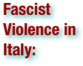

Italy witnessed significant widespread civil unrest and political strife in the aftermath of World War I and the rise of the Fascist movement led by Benito Mussolini which opposed the rise of the international left, especially the far-left along with others who opposed Fascism. Fascists and communists fought on the streets during this period as the two factions competed to gain power in Italy. The already tense political environment in Italy escalated into major civil unrest when Fascists began attacking their rivals, beginning on April 15, 1919 with Fascists attacking the offices of the Italian Socialist Party's newspaper Avanti!. Violence grew in 1921 with Italian army officers beginning to assist the Fascists with their violence against communists and socialists. With the Fascist movement growing, anti-fascists of various political allegiances (but generally of the international left) combined into the Arditi del Popolo (People's Militia) in 1921. With the threat of a general strike being initiated by anarchists, communists, and socialists, the Fascists launched a coup against the Italian government with the March on Rome in 1922 which pressured Prime Minister Luigi Facta to resign and allowed Mussolini to be appointed Prime Minister by the King Victor Emmanuel III. Two months after Mussolini took over as Prime Minister, Fascists attacked and killed members of the local labour movement in Turin in what became known as the 1922 Turin Massacre. The next act of violence was the assassination of Socialist deputy Giacomo Matteotti by Fascist militant Amerigo Dumini in 1924. This was followed by a Fascist takeover of the Italian government and multiple assassination attempts were made against Mussolini in 1926, with the last attempt on October 31, 1926. On November 9, 1926, the Fascist government initiated emergency powers which resulted in the arrest of multiple anti-Fascists including communist Antonio Gramsci. Afterwards serious opposition to the Fascist regime collapsed. (wikipedia.org. Accessed August 15-17, 2011.)

The 1918 flu pandemic (the Spanish Flu) was an influenza pandemic, and the first of the two pandemics involving H1N1 influenza virus (the follow-up was the 2009 flu pandemic). It was an unusually severe and deadly pandemic that spread across the world. Historical and epidemiological data are inadequate to identify the geographic origin. Most victims were healthy young adults, in contrast to most influenza outbreaks which predominantly affect juvenile, elderly, or weakened patients. The flu pandemic was implicated in the outbreak of encephalitis lethargica in the 1920s. The pandemic lasted from June 1918 to December 1920, spreading even to the Arctic and remote Pacific islands. Between 50 and 100 million died, making it one of the deadliest natural disasters in human history. Even using the lower estimate of 50 million people, 3% of the world's population (1.8 billion at the time) died of the disease. Some 550 million, or 32% (≈1/3), were infected. Tissue samples from frozen victims were used to reproduce the virus for study. This research concluded, among other things, that the virus kills through a cytokine storm (overreaction of the body's immune system), which perhaps explains its unusually severe nature and the concentrated age profile of its victims. The strong immune system reactions of young adults ravaged the body, whereas those of the weaker immune systems of children and middle-aged adults resulted in fewer deaths. (wikipedia.org. Accessed August 12-14, 2011.)

The Fourteen Points was a speech delivered by United States President Woodrow Wilson to a joint session of Congress on January 8, 1918. The address was intended to assure the country that the Great War was being fought for a moral cause and for postwar peace in Europe. People in Europe generally welcomed Wilson's intervention, but hisAllied colleagues (Georges Clemenceau, David Lloyd George and Vittorio Emanuele Orlando) were skeptical of the applicability of Wilsonian idealism. The speech was delivered 10 months before the Armistice with Germany and became the basis for the terms of the German surrender, as negotiated at the Paris Peace Conference in 1919. The Treaty of Versailles had little to do with the Fourteen Points and was never ratified by the U.S. Senate. . . The U.S. joined the Allies in fighting the Central Powers on April 6, 1917. The Fourteen Points in the speech were based on the research of the Inquiry, a team of about 150 advisors led by foreign-policy advisor Edward M. House into the topics likely to arise in the anticipated peace conference. Wilson's speech on January 8, 1918, took many of the principles of progressivism that had produced domestic reform in the U.S. and translated them into foreign policy (free trade, open agreements, democracy and self-determination). The Fourteen Points speech was the only explicit statement of war aims by any of the nations fighting in World War I. Some belligerents gave general indications of their aims, but most kept their post-war goals private. The speech also responded to Vladimir Lenin's Decree on Peace of October 1917, which proposed an immediate withdrawal of Russia from the war, calling for a just and democratic peace that was not compromised by territorial annexations, and led to the Treaty of Brest-Litovsk on March 3, 1918. (wikipedia.org. Accessed August 12-14, 2011.)

The Franco-Syrian War was a war from 1919 to 1921 between Syria and France. France conquered Syria; King Faisal, who was declared king of Greater Syria, was exiled to the United Kingdom. The British government, concerned for their position in the new mandate in Iraq, agreed to declare Faisal the new king of Iraq. Greater Syria was divided into two mandates: French Mandate of Syria and Lebanon and the British mandate of Palestine, including autonomous Transjordan. (wikipedia.org. Accessed August 15-17, 2011.)

The Franco-Turkish War or Cilicia War was a series of conflicts fought between France (the French Colonial Forces and the French Armenian Legion) and Turkish National Forces directed by Turkish Grand National Assembly from May 1920-October 1921 in the aftermath of World War I. French interest in the region resulted from the Sykes-Picot Agreement and the subsequent French-Armenian Agreement (1916) that led to the establishment of Armenian forces under the French Army. (wikipedia.org. Accessed August 15-17, 2011.)

Francoist Spain refers to a period of Spanish history between 1936 and 1975 when Spain was under the authoritarian dictatorship of Francisco Franco. The regime was formed on 1 October 1936 by Francisco Franco and the National Defense Committee (a faction of the Spanish army rebelling against the Republic). The regime was entrenched upon the victory in the Spanish Civil War of the rebel Nacionales coalition. Besides the internal support, Franco's rebellion had been backed from abroad by Fascist Italy and Nazi Germany, while the Second Spanish Republic was increasingly backed by the communist Soviet Union. After winning the Spanish Civil War, the Nacionales had established a single party authoritarian state under the undisputed leadership of Franco. World War II started shortly afterwards, and though Spain was officially neutral, it did send a special Division of troops to Russia to aid the Germans, and its pro-Axis stance led to it being isolated after the collapse of the Axis powers. This changed with the new Cold War scenario, on the face of which Franco's strong anti-communism naturally tilted its régime to ally with the United States. Spain was declared a kingdom in 1947, but no monarch was designated; Franco reserved for himself the right to name the person to be king, and deliberately delayed the selection due to political considerations. The selection finally came in 1969, with the designation of Juan Carlos de Borbón as Franco's official successor. With the death of Franco on 20 November 1975, Juan Carlos became the King of Spain. He immediately began the process of a transition to democracy, ending with Spain becoming a constitutional monarchy articulated by a parliamentary democracy. (wikipedia.org. Accessed August 15-17, 2011.)

The Free City of Danzig was a semi-autonomous city-state that existed between 1920 and 1939, consisting of the Baltic Sea port of Danzig (today Gdańsk) and surrounding areas. The Free City was created on 15 November 1920 in accordance with the terms of Part III, Section XI of the Treaty of Versailles of 1919 without a plebiscite. The Free City included the city of Danzig and over two hundred nearby towns, villages, and settlements. As the League of Nations decreed, the region was to remain separated from the nation of Germany, and from the newly-resurrected nation of Poland. The Free City was not an independent State; it was under League of Nations protection and put into a binding customs union with Poland. Poland also had special utilization rights towards the city. The Free City was created in order to give Poland sufficient access to the sea, while at the same recognizing that its population was mainly German. In 1933, the City's government was taken over by the local Nazi Party, the democratic opposition was suppressed and widespread anti-Semitic and anti-Polish discrimination and organized murder followed the German invasion of Poland in 1939, when the Free City was abolished and incorporated into the newly-formed Reichsgau of Danzig-West Prussia. This occurred without the approval of Poland or the League of Nations. Starting with the city's conquest by the Soviet Army in the early months of 1945, ethnic German citizens of the former Free City of Danzig were in large numbers forced to leave (expelled). The city was subsequently put under Polish administration by the Allied Potsdam Agreement, and Polish settlers were brought in to replace the German population. (wikipedia.org. Accessed August 15-17, 2011.)

Freikorps are German volunteer military or paramilitary units. The term was originally applied to voluntary armies formed in German lands from the middle of the 18th century onwards. Between World War I and World War II the term was also used for the paramilitary organizations that arose during the period of the Weimar Germany. Freikorps units fought both for and against the German state. They formed the vanguard of the Nazi movement. (wikipedia.org. Accessed August 15-17, 2011.)
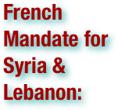

Officially the French Mandate for Syria and Lebanon was a League of Nations mandate founded after the First World War and the partitioning of the Ottoman Empire. During the two years that followed the end of the war in 1918, and in accordance with the Sykes-Picot Agreement that was signed between Britain and France during the war, the British held control of most Ottoman Mesopotamia (modern Iraq) and the southern part of the Ottoman Syria (Palestine and Jordan), while the French controlled the rest of Ottoman Syria (modern Syria, Lebanon, Alexandretta and other portions of southeastern Turkey). During the first years of the 1920s, the British and French control of these territories became formalized by the League of Nations' mandate system, and France was assigned the mandate of Syria on September 29, 1923, which included modern Lebanon and Alexandretta (Hatay) in addition to modern Syria. The French mandate of Syria lasted until 1943, when two independent countries emerged from the mandate period, Syria and Lebanon, in addition to Hatay which had joined Turkey in 1939. French troops left Syria and Lebanon finally in 1946. (wikipedia.org. Accessed August 15-17, 2011.)

The German American Bund or German American Federation was an American Nazi organization established in the 1930s. Its main goal was to promote a favorable view of Nazi Germany. (wikipedia.org. Accessed August 15-17, 2011.)

German occupation of Czechoslovakia (1938–1945) began with the Nazi annexation of Czechoslovakia's northern and western border regions, known collectively as the Sudetenland, under terms outlined by the Munich Agreement. Nazi leader Adolf Hitler's pretext for this effort was the alleged privations suffered by ethnic German populations living in those regions. There also existed new and extensive Czechoslovak border fortifications in the same area. Following the Anschluss of Nazi Germany and Austria, in March 1938, the conquest of Czechoslovakia became Hitler's next ambition. The incorporation of Sudetenland into Nazi Germany left the rest of Czechoslovakia weak and it became powerless to resist subsequent occupation. On 16 March 1939, the German Wehrmacht moved into the remainder of Czechoslovakia and, from Prague Castle, Hitler proclaimed Bohemia and Moravia the Protectorate of Bohemia and Moravia. The occupation ended with the surrender of Germany following World War II. (wikipedia.org. Accessed August 15-17, 2011.)
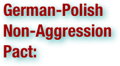

The German–Polish Non-Aggression Pact was an international treaty between Nazi Germany and the Second Polish Republic signed on January 26, 1934. In it, both countries pledged to resolve their problems through bilateral negotiations and to forgo armed conflict for a period of ten years. It effectively normalized relations between Poland and Germany, which were previously strained by border disputes arising from the territorial settlement in the Treaty of Versailles. As a consequence of the treaty, Germany effectively recognized Poland's borders and moved to end an economically damaging customs war which existed between the two countries during the previous decade. (wikipedia.org. Accessed August 15-17, 2011.)

The German Revolution, or Novemberrevolution, was the politically-driven civil conflict in Germany at the end of World War I, which resulted in the replacement of Germany's imperial government with a republic. The revolutionary period lasted from November 1918 until the formal establishment of the Weimar Republic in August 1919. The roots of the revolution lie in the German Empire's fate in the First World War and the social tensions which came to a head shortly thereafter. The first acts of revolution were triggered by the policy of the Supreme Command and its lack of coordination with the Naval Command which, in the face of defeat, nevertheless insisted on engaging in a climactic battle with the British Royal Navy. The Wilhelmshaven mutiny (a sailors' revolt) ensued in the naval ports of Wilhelmshaven and Kiel, and the spirit of rebellion spread across the country and led to the proclamation of a republic on 9 November 1918. Shortly thereafter Emperor Wilhelm II abdicated. The revolutionaries, inspired by communist ideas, failed to hand power to soviets as the Bolsheviks had in Russia, because the Social Democratic Party of Germany (SPD) leadership refused to work with those who supported the Bolsheviks. Furthermore, fearing an all-out civil war in Germany between the communists and the reactionary conservatives, the SPD did not plan to completely strip the old imperial elites of their power and instead sought to integrate them into the new social democratic system. In this endeavor, SPD leftists sought an alliance with the Supreme Command. The army and Freikorps (nationalist militias) quelled the Spartacist uprising by force. The political fragmentation among the left-wing was a significant factor in the failure of the left to seize power. The revolution ended officially on August 11, 1919, when the Weimar Constitution was adopted. (wikipedia.org. Accessed August 12-14, 2011.)

The most significant aspects of the Act were: 1) the grant of a large measure of autonomy to the provinces of British India (ending the system of dyarchy introduced by the Government of India Act 1919); 2) provision for the establishment of a "Federation of India", to be made up of both British India and some or all of the "princely states"; 3) the introduction of direct elections, thus increasing the franchise from seven million to thirty-five million people; 4) a partial reorganization of the provinces: Sind was separated from Bombay, Bihar and Orissa was split into the separate provinces of Bihar and Orissa, Burma was completely separated from India, Aden was also detached from India, and established as a separate colony; 5) membership of the provincial assemblies was altered so as to include more elected Indian representatives, who were now able to form majorities and be appointed to form governments; and, 6) the establishment of a Federal Court. However, the degree of autonomy introduced at the provincial level was subject to important limitations: the provincial Governors retained important reserve powers, and the British authorities also retained a right to suspend responsible government. The parts of the Act intended to establish the Federation of India never came into operation, due to opposition from rulers of the princely states. The remaining parts of the Act came into force in 1937, when the first elections under the Act were also held. (wikipedia.org. Accessed August 15-17, 2011.)

The Great Depression was a severe worldwide economic depression in the decade preceding World War II. The timing of the Great Depression varied across nations, but in most countries it started in about 1929 and lasted until the late 1930s or early 1940s. It was the longest, most widespread, and deepest depression of the 20th century. In the 21st century, the Great Depression is commonly used as an example of how far the world's economy can decline. The depression originated in the U.S., starting with the fall in stock prices that began around September 4, 1929 and became worldwide news with the stock market crash of October 29, 1929 (known as Black Tuesday). From there, it quickly spread to almost every country in the world. The Great Depression had devastating effects in virtually every country, rich and poor. Personal income, tax revenue, profits and prices dropped, while international trade plunged by more than 50%. Unemployment in the U.S. rose to 25%, and in some countries rose as high as 33%. Cities all around the world were hit hard, especially those dependent on heavy industry. Construction was virtually halted in many countries. Farming and rural areas suffered as crop prices fell by approximately 60%.[4][5][6] Facing plummeting demand with few alternate sources of jobs, areas dependent on primary sector industries such as cash cropping, mining and logging suffered the most. Some economies started to recover by the mid-1930s. However, in many countries the negative effects of the Great Depression lasted until the start of World War II. (wikipedia.org. Accessed August 15-17, 2011.)

The Great Purge was a series of campaigns of political repression and persecution in the Soviet Union orchestrated by Joseph Stalin from 1936 to 1938. It involved a large-scale purge of the Communist Party and government officials, repression of peasants, Red Army leadership, and the persecution of unaffiliated persons, characterized by widespread police surveillance, widespread suspicion of "saboteurs", imprisonment, and arbitrary executions. In Russian historiography the period of the most intense purge, 1937–1938, is called Yezhovshchina, after Nikolai Yezhov, the head of the Soviet secret police, NKVD. In the Western World, Robert Conquest's 1968 book The Great Terror popularized that phrase. Conquest was in turn inspired by the period of terror during the French Revolution. (wikipedia.org. Accessed August 15-17, 2011.)

Greater Hungary is the informal name of the territory of Hungary before the 1920 Treaty of Trianon. After 1920, between the two World Wars, the official political goal of the Hungary was to restore those borders. After World War II, Hungary abandoned this policy, and today it only remains a political goal of small marginalized groups of Hungarian revisionists. The Treaty of Trianon redefined the borders of Hungary so that it lost about 72% of its territory and about two-thirds of its inhabitants, almost 3 million people of Hungarian ethnicity. In its foreign policy, Hungary was seeking the revision of the peace treaty: this policy insulated it politically in the 1920s and pushed it towards Hitler's Germany in the 1930s. (wikipedia.org. Accessed August 15-17, 2011.)

The Greater Romania generally refers to the territory of Romania in the years between the First World War and the Second World War, the largest geographical extent of Romania up to that time and its largest peacetime extent ever (295,049 km²); more precisely, it refers to the territory of the Kingdom of Romania between 1919 and 1940. In 1918, at the end of World War I, Transylvania, Bukovina and Bessarabia united with the Romanian Old Kingdom. (wikipedia.org. Accessed August 15-17, 2011.)

The Greco–Turkish War of 1919–1922, known as the Western Front of the Turkish War of Independence in Turkey and the Asia Minor Campaign or the Asia Minor Catastrophe in Greece, was a series of military events occurring during the partitioning of the Ottoman Empire after World War I between May 1919 and October 1922. The war was fought between Greece and Turkish revolutionaries who would later establish the Republic of Turkey. The Greek campaign was launched because the western Allies, particularly British Prime Minister David Lloyd George, had promised Greece territorial gains at the expense of the Ottoman Empire. It ended with Greece giving up all territory gained during the war, returning to its pre-war borders, and engaging in a population exchange with the newly established state of Turkey under provisions in the Treaty of Lausanne. The collective failure of the Greek military campaign against the Turkish revolutionaries, coupled with the expulsion of the French military from the region of Cilicia, forced the Allies to abandon the Treaty of Sèvres. Instead, they negotiated a new treaty at Lausanne. This new treaty recognized the independence of the Republic of Turkey and its sovereignty over East Thrace and Anatolia. (wikipedia.org. Accessed August 15-17, 2011.)


During World War I and its aftermath (1914–1923), the government of the Ottoman Empire instigated a violent campaign against the Greek population of the Empire. The campaign included massacres, forced deportations involving death marches, and summary expulsions. According to various sources, several hundred thousand Ottoman Greeks died during this period. Some of the survivors and refugees, especially those in Eastern provinces, took refuge in the neighboring Russian Empire. After the end of the 1919–22 Greco-Turkish War, most of the Greeks remaining in the Ottoman Empire were transferred to Greece under the terms of the 1923 population exchange between Greece and Turkey. The government of Turkey, the successor state to the Ottoman Empire, maintains that the large-scale campaign was triggered by the perception that the Greek population was sympathetic to the enemies of the Ottoman state. The Allies of World War I took a different view, condemning the Ottoman government-sponsored massacres as crimes against humanity. More recently, the International Association of Genocide Scholars passed a resolution in 2007 affirming that the Ottoman campaign against Christian minorities of the Empire, including the Greeks, was genocide. Some other organizations have also passed resolutions recognizing the campaign as a genocide, as have the parliaments of Greece, Cyprus and Sweden. (wikipedia.org. Accessed August 12-14, 2011.)

Gugsa Welle's Rebellion of 1930 was a rebellion raised by Ras Gugsa Welle and by supporters of Empress Zewditu to rid her of the Crown Prince and heir apparent, Negus Tafari Makonnen. With Tafari gone, Zewditu would be the sole claimant to succession as the ruler of the Ethiopian Empire. As the husband of Empress Zewditu, Gugsa Welle expected to become Emperor. (wikipedia.org. Accessed August 15-17, 2011.)

The Hungarian Soviet Republic or Soviet Republic of Hungary was a short-lived Communist regime established in Hungary in the aftermath of World War I. Lasting only from 21 March until 6 August 1919, the Soviet republic led by Béla Kun collapsed when Romanian forces occupied Budapest during the Hungarian-Romanian War. It was the first Communist government to be formed in Europe after the October Revolution in Russia brought the Bolsheviks to power in that country. The successor to the state was the Kingdom of Hungary, which was formed after the Romanian Army pulled out of Hungary. (wikipedia.org. Accessed August 15-17, 2011.)
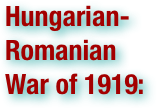

The seeds of the Hungarian–Romanian war of 1919were planted when Transylvania proclaimed union with Romania on December 1, 1918. In late March 1919, the Bolsheviks came to power in Hungary, at which point its army attempted to retake Transylvania, commencing the war. By its final stage, more than 120,000 troops on both sides were involved. The destruction of the Hungarian Soviet Republic and the Romanian occupation of parts of Hungary proper, including its capital Budapest in August 1919, ended the war. Romanian troops withdrew from Hungary in March 1920. (wikipedia.org. Accessed August 15-17, 2011.)

In economics, hyperinflation is inflation that is very high or "out of control". While the real values of the specific economic items generally stay the same in terms of relatively stable foreign currencies, in hyperinflationary conditions the general price level within a specific economy increases rapidly as the functional or internal currency, as opposed to a foreign currency, loses its real value very quickly, normally at an accelerating rate. Definitions used vary from one provided by the International Accounting Standards Board, which describes it as "a cumulative inflation rate over three years approaching 100% (26% per annum compounded for three years in a row)", to Cagan's (1956) "inflation exceeding 50% a month." As a rule of thumb, normal monthly and annual low inflation and deflation are reported per month, while under hyperinflation the general price level could rise by 5 or 10% or even much more every day. A vicious circle is created in which more and more inflation is created with each iteration of the ever increasing money printing cycle. Hyperinflation becomes visible when there is an unchecked increase in the money supply usually accompanied by a widespread unwillingness on the part of the local population to hold the hyperinflationary money for more than the time needed to trade it for something non-monetary to avoid further loss of real value. Hyperinflation is often associated with wars (or their aftermath), currency meltdowns, political or social upheavals, or aggressive bidding on currency exchanges. (wikipedia.org. Accessed August 15-17, 2011.)

The term Indian independence movement encompasses a wide spectrum of political organizations, philosophies, and movements which had the common aim of ending first British East India Company rule, and then British colonial authority, in parts of South Asia. The term incorporates various national and regional campaigns, agitations and efforts of both nonviolent and militant philosophy. The first organized militant movements were in Bengal, but it later took political stage in the form of a mainstream movement in the then newly-formed Indian National Congress (INC), with prominent moderate leaders seeking only their basic right to appear for civil service examinations, as well as more rights, economic in nature, for the people of the soil. The early part of the 20th century saw a more radical approach towards political independence proposed by leaders such as the Lal Bal Pal and Sri Aurobindo. Militant nationalism also emerged in the first decades, culminating in the failed Indo-German Pact and Ghadar Conspiracy during the First World War. The last stages of the freedom struggle from the 1920s onward saw Congress adopt Mohandas Karamchand Gandhi's policy of nonviolence, and several campaigns of civil resistance ensued. Some figures, such as Netaji Subhash Chandra Bose, later came to adopt a military approach to the movement, and others like Swami Sahajanand Saraswati who along with political freedom wanted economic freedom for India's peasants and toiling masses. The period of World War II saw the peak of movements such as the Quit India movement (led by Gandhi) and the Indian National Army (INA) movement (led by Bose). These various movements led to the formation of the independent Dominions of India and Pakistan in 1947. India remained a Dominion of the Crown until 26 January 1950, when the Constitution of India came into force, establishing the Republic of India. Pakistan continued as a Dominion until 1956, when it too became a republic. In 1971, the Pakistani Civil War broke out, which led to war between Pakistan and India; the result of this conflict saw the splintering-off of East Pakistan as the new nation of Bangladesh. The Indian independence movement was a mass-based movement that encompassed various sections of society at the time. It also underwent a process of constant ideological evolution. Although the basic ideology of the movement was anti-colonial, it was supported by a vision of independent capitalist economic development coupled with a secular, democratic, republican, and civil-libertarian political structure. After the 1930s, the movement took on a strong socialist orientation, due to the increasing influence of left-wing elements in the INC as well as the rise and growth of the Communist Party of India. (wikipedia.org. Accessed August 15-17, 2011.)


The Industrial Workers of the World (IWW or the Wobblies) is an international union. At its peak in 1923, the organization claimed some 100,000 members in good standing, and could marshal the support of perhaps 300,000 workers. Its membership declined dramatically after a 1924 split brought on by internal conflict. IWW membership does not require that one work in a represented workplace, nor does it exclude membership in another labor union. The IWW contends that all workers should be united as a class and that the wage system should be abolished. They may be best known for the Wobbly Shop model of workplace democracy, in which workers elect recallable delegates, and other norms of grassroots democracy (self-management) are implemented. On January 3, 2010 the IWW GHQ moved its general offices into a new location at 2117 W. Irving Park Rd., Chicago, IL. United States. The origin of the nickname "Wobblies" is uncertain. (wikipedia.org. Accessed August 15-17, 2011.)

The interwar period (1918–1939) is understood within Western culture to be the period between the end of the First World War and the beginning of the Second World War. This is also called the period between the wars or interbellum. . . This period of history was marked by turmoil, as Europe struggled to recover from the devastation of the First World War. In North America especially the first half of this period was one of considerable prosperity (the Roaring Twenties), but this changed dramatically with the onset of the Great Depression in 1929. It was during this time that the Weimar Republic in Germany gave way to two episodes of political and economic turmoil, the first culminated in the German hyperinflation of 1923 and the failed Beer Hall Putsch of that same year. The second convulsion, brought on by the worldwide depression, resulted in the rise of Nazism. In Asia, Japan became an ever more assertive power, especially with regards to China. The interwar period was marked by a radical change in the international order, away from the balance of power that had dominated pre–World War I Europe. One main institution intended to bring stability was the League of Nations, created after the First World War with the intention of maintaining world security and peace and encouraging economic growth between member countries. The League was undermined from the start by the non-participation of the United States and the Soviet Union, and subsequently by the bellicosity of Mussolini's Italy, Nazi Germany, and Imperial Japan - leading many to question its legitimacy and effectiveness. A series of international crises strained the League to its limits, the earliest being the invasion of Manchuria by Japan and the Abyssinian crisis of 1935/36 in which Italy invaded Abyssinia, one of the only free African nations at that time. The League tried to enforce economic sanctions upon Italy, but to no avail. The incident highlighted French and British weakness, exemplified by their reluctance to alienate Italy and lose her as their ally. The limited actions taken by the Western powers pushed Mussolini's Italy towards alliance with Hitler's Germany anyway. The Abyssinian war showed Hitler how weak the League was and encouraged his participation in the Spanish Civil War. He also remilitarized the Rhineland in flagrant disregard of the Treaty of Versailles. This was the first in a series of provocative acts culminating in the invasion of Poland in September 1939 and the beginning of the Second World War. (wikipedia.org. Accessed August 15-17, 2011.)
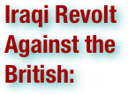

The Iraqi Revolt against the British (1920), or the Great Iraqi Revolution of 1920, started in Baghdad in the summer of 1920 with mass demonstrations of both Sunni and Shia, including protests by embittered officers from the old Ottoman army, against the policies of British Acting Civil Commissioner Sir Arnold Wilson. The revolt gained momentum when it spread to the largely Shia regions of the middle and lower Euphrates. Sheikh Mehdi Al-Khalissi was a prominent Shia leader of the revolt. Although the revolt was largely over by the end of 1920, elements of it dragged on until 1922.The revolt began in May 1920 as peaceful demonstrations against the British conquest of Iraq. Sunni and Shi’a religious communities cooperated during the revolution as well as tribal communities, the urban masses, and many Iraqi officers in Syria. The revolution turned bloody after the tribes began using violence to achieve their goals. The objectives of the revolution were independence from British rule and creation of an Arab government. Although the revolt achieved some initial success, by the end of October 1920 the British had crushed the revolt. There has been some debate among historians over whether the participants in the revolt were inspired by Iraqi nationalism or by other motives. A great deal of anti-British rebellion occurred in the north by the Kurds, who were trying to gain independence. One of the major Kurdish leaders was Sheik Mahmoud Barzinji. During the revolt, Britain used white phosphorus bombs against Kurdish villagers. These weapons were also used in Al-Habbniyah in Al-Anbar province, and the British continued to use these tactics throughout the 1920s in Iraq. (wikipedia.org. Accessed August 15-17, 2011.)

The Irish War of Independence, Anglo-Irish War, or Tan War was a guerrilla war mounted by the Irish Republican Army (IRA) against the British government and its forces in Ireland. It began in January 1919, following the Irish Republic's declaration of independence. Both sides agreed to a ceasefire (or "truce") in July 1921. The post-ceasefire talks led to the December 1921 Anglo-Irish Treaty. This treaty ended British rule in most of Ireland and, after a ten-month transitional period overseen by a provisional government, the Irish Free State was established. However, six northern counties remained within the United Kingdom as Northern Ireland, with its own devolved parliament. After the ceasefire, political and sectarian violence (between republicans and loyalists, and between Irish Catholics and Protestants) continued in Northern Ireland for many months. The IRA that fought in this conflict is often called the Old IRA to distinguish it from later groups that also used the name. (wikipedia.org. Accessed August 15-17, 2011.)

The Iron Guard is the name most commonly given to a far-right movement and political party in Romania in the period from 1927 into the early part of World War II. The Iron Guard was ultra-nationalist, anti-communist who promoted the Orthodox Christian faith. It is also considered an antisemitic organization, an ideologist of which even going as far as to demand an introduction of “state anti-semitism”. Originally founded by Corneliu Zelea Codreanu on July 24, 1927, as the Legion of the Archangel Michael, and led by him until his death in 1938, adherents to the movement continued to be widely referred to as "legionnaires" (sometimes "legionaries") and the organization as the "Legion" or the "Legionary Movement", despite various changes of the (intermittently banned) organization's name. In March 1930 Codreanu formed the "Iron Guard" ("Garda de Fier") as a paramilitary political branch of the Legion; this name eventually came to refer to the Legion itself. Later, in June 1935, the Legion changed its official name to the "Totul pentru Ţară" party, literally "Everything for the Country", but commonly translated as "Everything for the Fatherland" or occasionally "Everything for the Motherland". (wikipedia.org. Accessed August 15-17, 2011.)

Italian Fascism also known in Italian as Fascismo is an radical, authoritarian Italian nationalist political ideology. It is the original manifestation of fascism. This ideology is associated with the National Fascist Party which under Benito Mussolini ruled the Kingdom of Italy from 1922 until 1943, the Republican Fascist Party which ruled theItalian Social Republic from 1943 to 1945, the post-war Italian Social Movement, and subsequent Italian neo-fascist movements. Italian Fascism supports the restoration of "Italia Irredenta" (claimed unredeemed Italian territories) to Italy and territorial expansionism. Italian Fascists claim that modern Italy is the heir to the Roman Empire and its territorial legacy, and support the creation of "vital space" for colonization by Italian settlers and establishing control over the Mediterranean Sea as Italy's Mare Nostrum. Italian Fascism promotes a corporatist economic system whereby employer and employee syndicates are linked together in a corporative associations to collectively represent the nation's economic producers and work alongside the state to set national economic policy. Italian Fascists claim that this economic system resolves and ends class conflict by creating class collaboration. Etymologically, Fascismo (Fascism) derives from the Italian fascio (league), derived from the Latin fasces (bundles); the ancient Roman Symbol of Authority. It dates from Mussolini’s January 1915 and the 1919 establishment of the Fascist Revolutionary Party begun as the fasci di combattimento (combat leagues) popular movement. (wikipedia.org. Accessed August 15-17, 2011.)
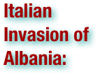

The Italian invasion of Albania (April 7 – April 12, 1939) was a brief military campaign by the Kingdom of Italy against the Albanian Kingdom. The conflict was a result of the expansionist policies of Italian dictator Benito Mussolini. Albania was rapidly overrun, its ruler, King Zog I, forced into exile, and the country made part of Greater Italy and the Italian Empire as a separate kingdom in personal union with the Italian crown. (wikipedia.org. Accessed August 15-17, 2011.)

The Jaffa riots (commonly known as Me'oraot Tarpa) were a series of violent riots in Palestine on May 1–7, 1921, which began as a fight between two Jewish groups but developed into an attack by Arabs on Jews during which many were killed. The rioting began in Jaffa and spread to other places. (wikipedia.org. Accessed August 15-17, 2011.)

The Jallianwala Bagh massacre, also known as the Amritsar massacre, took place in the Jallianwala Bagh public garden in the northern Indian city of Amritsar, and was ordered by General R.E.H. Dyer. On Sunday April 13, 1919, which happened to be 'Baisakhi', one of Punjab's largest religious festivals, fifty British Indian Army soldiers, commanded by Brigadier-General Reginald Dyer, began shooting at an unarmed gathering of men, women, and children without warning. Dyer marched his fifty riflemen to a raised bank and ordered them to kneel and fire. Dyer ordered soldiers to reload their rifles several times and they were ordered to shoot to kill. Official British Raj sources estimated the fatalities at 379, and with 1,100 wounded. Civil Surgeon Dr Williams DeeMeddy indicated that there were 1,526 casualties. However, the casualty number quoted by the Indian National Congress was more than 1,500, with roughly 1,000 killed. (wikipedia.org. Accessed August 15-17, 2011.)

The Empire of Japan was a Japanese political entity that existed since the Meiji Restoration on 3 January 1868 until its defeat in World War II, and the enforcement of the Constitution of the State of Japan on 3 May 1947. (wikipedia.org. Accessed August 15-17, 2011.)

The Japanese invasion of Manchuria was a military incursion in 1931. Manchuria was invaded by the Kwantung Army of the Empire of Japan, beginning on September 19, 1931, immediately following the Mukden Incident. The Japanese established a puppet state, called Manchukoku, and their occupation lasted until the end of World War II. (wikipedia.org. Accessed August 15-17, 2011.)

The Kingdom of Hungary also known as the Regency, existed from 1920 to 1946 and was a de facto country under Regent Miklós Horthy. Horthy officially represented the abdicated Hungarian monarchy of Charles IV, Apostolic King of Hungary. Attempts by Charles IV to return to the throne were prevented by threats of war from neighbouring countries and by the lack of support from Horthy. The Kingdom of Hungary under Horthy was an Axis Power during most of World War II. In 1944, Hungary was occupied by Nazi Germany, and Horthy was deposed. The Arrow Cross Party's leader Ferenc Szálasi established a new Nazi-backed government, effectively turning Hungary into a German puppet state. During the late spring and summer, the Germans forced the roundup and deportation of hundreds of thousands of Hungarian Jews to their extermination camps, where most died. After World War II, Hungary fell within the Soviet Union's sphere of interest. In 1946, the Second Hungarian Republic was established under Soviet control. (wikipedia.org. Accessed August 15-17, 2011.)

The Kingdom of Yugoslavia was a state stretching from the Western Balkans to Central Europe which existed during the often-tumultuous interwar era of 1918–1941. It was formed in 1918 by the merger of the provisional State of Slovenes, Croats and Serbs, formed from territories of the defunct Austro-Hungarian Empire, with the formerly independent Kingdom of Serbia. The Kingdom of Montenegro united with Serbia just five days earlier, while the regions of Kosovo, Vojvodina and Macedonia were parts of Serbia prior to the unification. For its first eleven years of existence it was officially called Kingdom of Serbs, Croats and Slovenes, but the term Yugoslavia was its colloquial name from the very beginning. On 17 April 1941, Yugoslavia was occupied by Nazi Germany and was reorganized into four provinces under foreign rule; a royal government-in-exile, recognized by the United Kingdom and later by all the Allied powers, was established in London. In 1943, the new country called Democratic Federal Yugoslavia was proclaimed, and its capital was freed following the Belgrade Offensive. The King was formally deposed by the Constituent assembly on 29 November 1945. (wikipedia.org. Accessed August 15-17, 2011.)
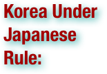

Korea was under Japanese rule as part of Japan's 35-year imperialist expansion (22 August 1910 to 2 September 1945). Japanese rule ended on 2 September 1945 upon the Japanese defeat in World War II. Korea was occupied and declared a Japanese protectorate in the 1905 Eulsa Treaty, and officially annexed in 1910 through the annexation treaty. Japan's involvement in the region began with the 1876 Treaty of Ganghwa during the Joseon Korea. The 1905 and 1910 treaties were eventually declared "null and void" by both Japan and South Korea in 1965. (wikipedia.org. Accessed August 15-17, 2011.)

Kristallnacht, also to referred to as the Night of Broken Glass, and also Reichskristallnacht, Pogromnacht, and Novemberpogrome, was a pogrom or series of attacks against Jews throughout Nazi Germany and parts of Austria on November 9–10, 1938. Jewish homes were ransacked, as were shops, towns and villages, as SA stormtroopers and civilians destroyed buildings with sledgehammers, leaving the streets covered in pieces of smashed windows—the origin of the name "Night of Broken Glass." Ninety-one Jews were killed, and 30,000 Jewish men—a quarter of all Jewish men in Germany—were taken to concentration camps, where they were tortured for months, with over 1,000 of them dying. Around 1,668 synagogues were ransacked, and 267 set on fire. In Vienna alone 95 synagogues or houses of prayer were destroyed. Martin Gilbert writes that no event in the history of German Jews between 1933 and 1945 was so widely reported as it was happening, and the accounts from the foreign journalists working in Germany sent shock waves around the world. The Times wrote at the time: "No foreign propagandist bent upon blackening Germany before the world could outdo the tale of burnings and beatings, of blackguardly assaults on defenseless and innocent people, which disgraced that country yesterday." The trigger of the attacks was the assassination of German diplomat Ernst vom Rath by Herschel Grynszpan, a German-born Polish Jew in Paris, France. Kristallnacht was followed by further economic and political persecution of Jews, and is viewed by historians as part of Nazi Germany's broader racial policy, and the beginning of the Final Solution and the Holocaust. (wikipedia.org. Accessed August 15-17, 2011.)


The Lateran Treaty is one of the Lateran Pacts of 1929 or Lateran Accords, three agreements made in 1929 between the Kingdom of Italy and the Holy See, ratified June 7, 1929, ending the "Roman Question." Italy was then under a Fascist government; the succeeding Italian governments have all upheld the treaty. The pacts consisted of three documents: 1) A political treaty recognizing the full sovereignty of the Holy See in the State of Vatican City, which was thereby established; 2) A concordat regulating the position of the Catholic Church and the Catholic religion in the Italian state; and, 3) A financial convention agreed on as a definitive settlement of the claims of the Holy See following the losses of its territories and property. (wikipedia.org. Accessed August 15-17, 2011.)

The Latvian War of Independence, sometimes called the Latvian War of Liberation, was a series of military conflicts in Latvia between 5 December 1918, after the Republic of Latvia proclaimed its independence, and the signing of the Treaty of Riga between the Republic of Latvia and the Russian SFSR on August 11, 1920. The war involved Latvia (its provisional government was supported by Estonia, Poland, and the Western Allies, particularly the United Kingdom) against the Russian SFSR and the Bolsheviks' short-lived Latvian Socialist Soviet Republic. Germany and the United Baltic Duchy added a new level of intrigue, initially being nominally allied to the Nationalist/Allied force, but attempting to jockey for German domination of Latvia. Eventually, the tensions flared up after a German coup against the Latvian government and led to open war. Following a ceasefire, the Germans developed a ploy, nominally dissolving into the West Russian Volunteer Army led by general Pavel Bermont-Avalov. The West Russian Volunteer Army included Germans and former Russian prisoners of war nominally allied with the White Army in the Russian Civil War, but both Bermondt-Avalov and von der Goltz were more interested in eliminating the nationalists than fighting the Bolsheviks. Certain episodes of the Latvian Independence War are therefore also considered by Polish historians to be a part of the Polish-Soviet War (particularly the Battle of Daugavpils). (wikipedia.org. Accessed August 15-17, 2011.)
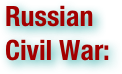

The Russian Civil War (1917–23) was a multi-party war that occurred within the former Russian Empire after the Russian provisional government collapsed to the Soviets, under the domination of the Bolshevik party. Soviet forces first assumed power in Petrograd (St. Petersburg) and subsequently gained control throughout Russia. The principal fighting occurred between the Bolshevik Red Army, often in temporary alliance with other leftist pro-revolutionary groups, and the forces of the White Army, the loosely-allied anti-Bolshevik forces. Many foreign armies warred against the Red Army, notably the Allied Forces, and many volunteer foreigners fought on both sides of the Russian Civil War. (wikipedia.org. Accessed August 12-14, 2011.)


The Russian Revolution is the collective term for a series of revolutions in Russia in 1917, which destroyed the Tsarist autocracy and led to the creation of the Soviet Union. The Tsar was deposed and replaced by a provisional government in the first revolution of February 1917 (March in the Gregorian calendar; the older Julian calendar was in use in Russia at the time). In the second revolution, during October, the Provisional Government was removed and replaced with a Bolshevik (Communist) government. The February Revolution (March 1917) was a revolution focused around Petrograd (now St. Petersburg). In the chaos, members of the Imperial parliament or Duma assumed control of the country, forming the Russian Provisional Government. The army leadership felt they did not have the means to suppress the revolution and Tsar Nicholas II of Russia, the last Tsar of Russia, abdicated. The Soviets (workers' councils), which were led by more radical socialist factions, initially permitted the Provisional Government to rule, but insisted on a prerogative to influence the government and control various militias. The February Revolution took place in the context of heavy military setbacks during the First World War, which left much of the army in a state of mutiny. A period of dual power ensued, during which the Provisional Government held state power while the national network of Soviets, led by socialists, had the allegiance of the lower-class citizens and the political left. During this chaotic period there were frequent mutinies and many strikes. When the Provisional Government chose to continue fighting the war with Germany, the Bolsheviks and other socialist factions campaigned for the abandonment of the war effort. The Bolsheviks formed workers militias under their control into the Red Guards (later the Red Army) over which they exerted substantial control. In the October Revolution (November in the Gregorian calendar), the Bolshevik party, led by Vladimir Lenin, and the workers' Soviets, overthrew the Provisional Government in St Petersburg. The Bolsheviks appointed themselves as leaders of various government ministries and seized control of the countryside, establishing the Cheka to quash dissent. To end the war, the Bolshevik leadership signed the Treaty of Brest-Litovsk with Germany in March 1918. Civil war erupted between the "Red" (Bolshevik), and "White" (anti-Bolshevik) factions, which was to continue for several years, with the Bolsheviks ultimately victorious. In this way the Revolution paved the way for the Union of Soviet Socialist Republics (USSR). While many notable historical events occurred in Moscow and St Petersburg, there was also a broad-based movement in cities throughout the state, among national minorities throughout the empire, and in the rural areas, where peasants took over and redistributed land. (wikipedia.org. Accessed August 12-14, 2011.)

The Territory of the Saar Basin, also referred as the Saar or Saargebiet, was a region of Germany that was occupied and governed by Britain and France from 1920 to 1935 under a League of Nations mandate, with the occupation originally being under the auspices of the Treaty of Versailles. Its population in 1933 was 812,000, and its capital was Saarbrücken. It corresponds to the modern German state of Saarland, but is slightly smaller in area. After a plebiscite was held in 1935, it was restored to Germany. (wikipedia.org. Accessed August 15-17, 2011.)

The Second Hellenic Republic is the term used to describe the political regime of Greece from 1924 to 1935. It followed from the period of the constitutional monarchy under the monarchs of the House of Glücksburg, and lasted until its overthrow in a military coup d'état which restored the monarchy. The Second Republic marks the second period in modern Greek history where Greece was not headed by a king, with the assemblies and provisional governments of the Greek Revolution being regarded as the First Republic. The Second Republic was proclaimed on 25 March 1924, in the aftermath of Greece's defeat by Turkey in the Asia Minor Campaign, which was widely blamed on the royalist government. During its brief existence, the Second Republic proved unstable. Greek society continued to be divided, as it was since the National Schism, between the pro-Republican Venizelists and the monarchists represented by the People's Party, who refused to acknowledge even the legitimacy of the Republic. The cleavage in society extended to cultural and social issues such as differences over the use of Greek language to architectural styles. To this polarization was added the destabilizing involvement of the military in politics which resulted in several coups and attempted coups. The economy was in ruins following a decade of warfare and was unable to support the 1.5 million refugees from the population exchange with Turkey. Despite the efforts of the reformist government of Eleftherios Venizelos in 1928-1932, the Great Depression had disastrous impact on Greece's economy. The electoral victory of the People's Party in 1933, and two failed Venizelist coups, paved the way to the restoration of King George II. (wikipedia.org. Accessed August 15-17, 2011.)
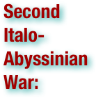

The Second Italo–Abyssinian War (also referred to as the Second Italo-Ethiopian War) was a colonial war that started in October 1935 and ended in May 1936. The war was fought between the armed forces of the Kingdom of Italy (Regno d'Italia) and the armed forces of the Ethiopian Empire (also known as Abyssinia). The war resulted in the military occupation of Ethiopia and its annexation into the newly created colony of Italian East Africa (Africa Orientale Italiana, or AOI). Politically, the war is best remembered for exposing the inherent weakness of the League of Nations. Like the Mukden Incident in 1931 (the Japanese annexation of three Chinese provinces), the Abyssinia Crisis in 1934 is often seen as a clear example of the ineffectiveness of the League. Both Italy and Ethiopia were member nations and yet the League was unable to control Italy or to protect Ethiopia when Italy clearly violated the League's own Article X. The positive outcome of the war for the Italians coincided with the zenith of the international popularity of dictator Benito Mussolini's Fascist regime, in a phase called "the age of consensus" during which foreign leaders praised him for his achievements. Historians like James Burgwyn called the victory of Mussolini "a capital achievement", but he was forced to accept the Austrian annexation by nazi Germany and to begin a political tilt toward Germany's Hitler that finally destroyed him and fascist Italy in World War II. Indeed this Italian victory, that brought the creation of the Italian Empire with Ethiopia included, was short-lived as Abyssinia regained its independence only five years later during World War II at the end of the East African Campaign with the help of Allied forces. (wikipedia.org. Accessed August 15-17, 2011.)
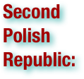

The Second Polish Republic, Second Commonwealth of Poland or interwar Poland refers to Poland between the two world wars; a period in Polish history in which Poland was restored as an independent state. Officially known as the Republic of Poland or the Commonwealth of Poland, the Polish state was created in 1918 in the aftermath of World War I. It continued to exist until 1939, despite both internal and external pressures, when Poland was invaded by Nazi Germany, the Soviet Union, and the Slovak Republic, marking the beginning of World War II. When the borders of the state were fixed in 1922 after several regional conflicts, the Republic bordered Czechoslovakia, Germany, Free City of Danzig, Lithuania, Latvia, Romania, and the Soviet Union, plus a tiny strip of the coastline of the Baltic Sea, around the city of Gdynia. Furthermore, in the period March 1939 – August 1939, Poland bordered then-Hungarian Carpathian Ruthenia. It had an area of 388,634 km² (sixth largest in Europe, in the fall of 1938, after the annexation of Zaolzie, the area grew to 389,720 km².), and 27.2 million inhabitants according to the 1921 census. In 1939, just before the outbreak of World War II, it had an estimated 35.1 million inhabitants. Almost a third of these were of minority groups: 13.9% Ukrainians; 3.1% Belarusians; 8.6% Jews; 2.3% Germans; and 3.4% percent Czechs, Lithuanians and Russians). At the same time significant number of ethnic Poles lived outside the country borders. The Second Polish Republic is often associated with times of great adversity, of troubles and of triumph. Having to deal with the economic difficulties and destruction of World War I, followed by the Soviet invasion during the Polish–Soviet War, and then increasingly hostile neighbors such as Nazi Germany, the Republic managed not only to endure, but to expand. Lacking an overseas empire, Poland nevertheless maintained a level of economic development and prosperity comparable to that of the West. The cultural hubs of Warsaw, Kraków, Poznań, Wilno and Lwów raised themselves to the level of major European cities. They were also the sites of internationally acclaimed universities and other institutions of higher education. By 1939, the Republic had become "one of Europe's major powers". (wikipedia.org. Accessed August 15-17, 2011.)
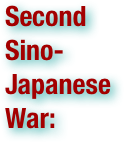

The Second Sino-Japanese War (July 7, 1937 – September 9, 1945) was a military conflict fought primarily between the Republic of China and the Empire of Japan. From 1937 to 1941, China fought Japan with some economic help from Germany, the Soviet Union (1937–1940) and the United States. After the Japanese attack on Pearl Harbor (1941), the war merged into the greater conflict of World War II as a major front of what is broadly known as the Pacific War. The Second Sino-Japanese War was the largest Asian war in the 20th century. It also made up more than 50% of the casualties in the Pacific War if the 1937–1941 period is taken into account. Although the two countries had fought intermittently since 1931, total war started in earnest in 1937 and ended only with the surrender of Japan in 1945. The war was the result of a decades-long Japanese imperialist policy aiming to dominate China politically and militarily and to secure its vast raw material reserves and other economic resources, particularly food and labour. Before 1937, China and Japan fought in small, localized engagements, so-called "incidents". Yet the two sides, for a variety of reasons, refrained from fighting a total war. In 1931, the Japanese invasion of Manchuria by Japan's Kwantung Army followed the Mukden Incident. The last of these incidents was the Marco Polo Bridge Incident of 1937, marking the beginning of total war between the two countries. (wikipedia.org. Accessed August 15-17, 2011.)

The Second Spanish Republic was the government of Spain between April 14, 1931 and its destruction by a successful military rebellion led by General Francisco Franco. The Second Spanish Republic was proclaimed when King Alfonso XIII left the country following municipal elections in which republican candidates won the majority of votes. Its government went into exile on April 1, 1939, when the last of the loyalist Republican forces surrendered to rebel forces (calling themselves nacionales) led by Generalísimo Franco at the end of the Spanish Civil War. The government in exile of the Second Spanish Republic would have an embassy in Mexico City until 1976 and was formally dissolved the following year. (wikipedia.org. Accessed August 15-17, 2011.)


Self-determination is the principle in international law that nations have the right to freely choose their sovereignty and international political status with no external compulsion or external interference. The principle does not state how the decision is to be made, or what the outcome should be, whether it be independence, federation, protection, some form of autonomy or even full assimilation. Neither does it state what the delimitation between nations should be — or even what constitutes a nation. In fact, there are conflicting definitions and legal criteria for determining which groups may legitimately claim the right to self-determination. (wikipedia.org. Accessed August 12-14, 2011.)

The Silesian Uprisings were a series of three armed uprisings of the Poles and Polish Silesians of Upper Silesia, from 1919–1921, against German rule; the resistance hoped to break away from Germany in order to join the Second Polish Republic, which had been established in the wake of World War I. In the latter-day history of Poland after World War II, the insurrections were celebrated as center-pieces of national pride. (wikipedia.org. Accessed August 15-17, 2011.)

The Simele Massacre was a massacre committed by the Iraqi government during the systematic targeting of Assyrians of Northern Iraq in August 1933. The term is used to describe not only the massacre in Simele, but also the killing spree that continued among 63 Assyrian villages in the Dohuk and Mosul districts that led to the deaths of an estimated 3,000 Assyrian villagers. The Assyrian people at the time were emerging from one of the darkest periods of their history. During the Assyrian genocide at the end of World War I, more than half of their population was massacred by Ottoman Turks and Kurds. The term 'genocide' was coined by Raphael Lemkin, who was directly influenced by the story of this massacre and the Armenian Genocide. (wikipedia.org. Accessed August 15-17, 2011.)
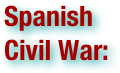

The Spanish Civil War (The Crusade among Nationalists, Fourth Carlist War among Carlists, The Rebellion or Uprising among Republicans) was a major conflict fought in Spain from 17 July 1936 to 1 April 1939. The war began after a pronunciamiento by a group of conservative generals under the leadership of Emilio Mola against the Government of the Second Spanish Republic, at the time under the leadership of President Manuel Azaña. The rebel coup was supported by the conservative groups including the Spanish Confederation of the Autonomous Right, monarchists such as the Carlists, and the Fascist Falange. Following the only partially successful coup, Spain was left militarily and politically divided. From that moment onwards Mola's successor, General Franco, began a protracted war with the established government, as loyalist supporters of the centre-left Republican Government fought the rebel forces for control of the country. The conservative generals (nacionales) received the support of Nazi Germany and the Kingdom of Italy, as well as neighboring Portugal, while the Soviet Union and Mexico intervened in support of the Republican government. Bloody purges occurred in pieces of territory conquered from the republic in order to consolidate Franco's future regime, while similar killings took place in areas taken by the Republicans. The Civil War became notable for the passion and political division it inspired. Many civilians on both sides were killed for their political or religious views, and after the War's conclusion in 1939, those associated with the losing Republicans were persecuted by the victorious Nationalists. The war ended with the victory of the rebel Nationalists, the overthrow of the Republican Government, and the exile of thousands of Spanish Republicans, many of whom fled to refugee camps in Southern France. With the establishment of a conservative dictatorship led by General Francisco Franco in the aftermath of the Civil War, all right-wing parties were fused into the structure of the Franco regime. (wikipedia.org. Accessed August 15-17, 2011.)

The Spartacist uprising, also known as the January uprising (Januaraufstand), was a general strike (and the armed battles accompanying it) in Germany from January 5 to January 15, 1919. Its suppression marked the end of the German Revolution. The name "Spartacist uprising" is generally used for the event even though neither the Spartakusbund nor the Communist Party of Germany (KPD) initiated or led the uprising and only participated after it had already begun. It was one of a number of elements that contributed to German disillusionment with the Weimar Government. (wikipedia.org. Accessed August 15-17, 2011.)

The stab-in-the-back legend is the notion, widely believed in right-wing circles in Germany after 1918, that the German Army did not lose World War I but was instead betrayed by the civilians on the home front, especially the republicans who overthrew the monarchy. Advocates denounced the German government leaders who signed the Armistice on November 11, 1918, as the "November Criminals". When the Nazis came to power in 1933 they made the legend an integral part of their official history of the 1920s, portraying the Weimar Republic as the work of the "November criminals" who used the stab in the back to seize power while betraying the nation. The Nazi propaganda depicted Weimar as "a morass of corruption, degeneracy, national humiliation, ruthless persecution of the honest 'national opposition' - fourteen years of rule by Jews, Marxists and 'cultural Bolsheviks', who had at last been swept away by the National Socialist movement under Adolf Hitler and the victory of the 'national revolution' of 1933." Scholars inside and outside Germany unanimously reject the notion, pointing out the German army was out of reserves and was being overwhelmed in the fall of 1918. (wikipedia.org. Accessed August 12-14, 2011.)

The Sykes–Picot Agreement of 1916 was a secret agreement between the governments of the UK and France, with the assent of Imperial Russia, defining their respective spheres of influence and control in Western Asia after the expected downfall of the Ottoman Empire during World War I. It effectively divided the Arab provinces of the Ottoman Empire outside the Arabian peninsula into areas of future British and French control or influence. The agreement was concluded on 16 May 1916. The terms were negotiated by the French diplomat François Georges-Picot and British Sir Mark Sykes. The Russian Tsarist government was a minor party to the Sykes-Picot agreement and when, following the Russian Revolution of October 1917, the Bolsheviks exposed the agreement, 'the British were embarrassed, the Arabs dismayed and the Turks delighted.' (wikipedia.org. Accessed August 12-14, 2011.)
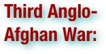

The Third Anglo-Afghan War began on 6 May 1919 and ended with an armistice on 8 August 1919. It was a minor tactical victory for the British. For the British, the Durand Line was reaffirmed as the political boundary between the Emirate of Afghanistan and British India and the Afghans agreed not to foment trouble on the British side. In the aftermath, the Afghans were able to resume the right to conduct their own foreign affairs as a fully independent state. (wikipedia.org. Accessed August 15-17, 2011.)

The Treaty of Lausanne was a peace treaty signed in Lausanne, Switzerland on July 24, 1923, that settled the Anatolian and East Thracian parts of the partitioning of the Ottoman Empire. The treaty of Lausanne was ratified by the Greek government on February 11, 1924, by the Turkish government on March 31, and by the governments of Great Britain, Italy and Japan on August 6. It was registered in the League of Nations Treaty Series on September 5, 1924. The Treaty of Lausanne superseded the Treaty of Sèvres which was signed by representatives of the Ottoman Empire. The treaty was the consequence of the Turkish War of Independence between the Allies of World War I and the Ankara-based Grand National Assembly of Turkey (Turkish national movement) led by Mustafa Kemal Atatürk. The treaty also led to the international recognition of the sovereignty of the new Republic of Turkey as the successor state of the defunct Ottoman Empire. London Pact, or more correctly, the Treaty of London, 1915, was a secret pact between Italy and Triple Entente, signed in London on 26 April 1915 by the Kingdom of Italy, Great Britain, France and Russia. According to the pact, Italy was to leave the Triple Alliance and join Triple Entente, as already stated in a secret agreement signed in London, on 4–5 September 1914. Furthermore, Italy was to declare war against Germany and Austria-Hungary within a month (this would happen against Austria-Hungary within a month but much later, 1916, with Germany), Italy was to obtain . . . territorial gains at the end of the war. (wikipedia.org. Accessed August 12-14, 2011.)

The Treaty of Versailles was one of the peace treaties at the end of World War I. It ended the state of war between Germany and the Allied Powers. It was signed on June 28, 1919, exactly five years after the assassination of Archduke Franz Ferdinand. The other Central Powers on the German side of World War I were dealt with in separate treaties. Although the armistice signed on November 11, 1918 ended the actual fighting, it took six months of negotiations at the Paris Peace Conference to conclude the peace treaty. The treaty was registered by the Secretariat of the League of Nations on October 21, 1919, and was printed in The League of Nations Treaty Series. Of the many provisions in the treaty, one of the most important and controversial required Germany to accept responsibility for causing the war (along with Austria and Hungary, according to the Treaty of Saint-Germain-en-Laye and the Treaty of Trianon) and, under the terms of articles 231–248 (later known as the War Guilt clauses), to disarm, make substantial territorial concessions and pay heavy reparations to certain countries that had formed the Entente powers. The total cost of these reparations was assessed at 132 billion Marks (then $31.4 billion, £6.6 billion) in 1921 which is roughly equivalent to US $442 billion and UK £217 billion in 2011, a sum that many economists at the time, notably John Maynard Keynes, deemed to be excessive and counterproductive and would have taken Germany until 1988 to pay. The final payments ended up being made on October 4, 2010, the 20th anniversary of German reunification, and some 92 years after the end of the war for which they were exacted. The Treaty was undermined by subsequent events starting as early as 1932 and was widely flouted by the mid-1930s. The result of these competing and sometimes conflicting goals among the victors was compromise that left none contented: Germany was not pacified or conciliated, nor permanently weakened. This would prove to be a factor leading to later conflicts, notably and directly World War II. (wikipedia.org. Accessed August 12-14, 2011.)
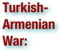

The Turkish–Armenian War stemmed from an invasion of the Democratic Republic of Armenia by the Turkish Revolutionaries of the Turkish National Movement in the autumn of 1920. In a span of four months, Mustafa Kemal Pasha's Turkish Nationalist armies, financed and armed largely by the Russian Soviet Federative Socialist Republic, were able to occupy the western portions of Armenia and impose a harsh settlement which resulted in the loss of over half its territory. The Turkish military victory was followed by Soviet Russia's occupation and sovietization of the rest of the DRA. The Treaty of Moscow between Soviet Russia and the Grand National Assembly of Turkey (March 1920) and the identical Treaty of Kars (October 1920) finalized the effective partitioning of Armenia between Turkey and Soviet Russia, with the subsequent creation of the USSR's Armenian Soviet Socialist Republic. (wikipedia.org. Accessed August 15-17, 2011.)

The Turkish War of Independence (May 19, 1919-July 24, 1923) was a war of independence waged by Turkish nationalists against the Allies, after the country was partitioned by the Allies following the Ottoman Empire's defeat in World War I. The Turkish National Movement in Anatolia culminated in the formation of a new Grand National Assembly (GNA) byMustafa Kemal Pasha and his colleagues. The GNA successfully mobilized its resources. After the end of the Turkish-Armenian, Franco-Turkish, Greco-Turkish wars, the Treaty of Sèvres was abandoned and the Treaty of Lausanne was signed in July 1923. The Allies left Anatolia and Eastern Thrace and then the formation of the Republic of Turkey was declared in October 1923. The establishment of the Turkish National Movement led to the end of the Ottoman millet system and with Atatürk's reforms created a modern, secular nation-state on the political front. (wikipedia.org. Accessed August 12-14, 2011.)

The Ukrainian War of Independence was a series of military conflicts between Ukrainian, Anarchist, Bolshevik, the Central Powers forces of Germany and Austria-Hungary, the White Russian Volunteer Army, and Second Polish Republic forces for control of the territory of modern Ukraine after the February Revolution in the Russian Empire. Also involved were foreign interventionists, in particular France and Romania. The struggle lasted from February 1917 to March 1921 and resulted in the division of Ukraine proper between the Bolshevik Ukrainian SSR, Poland, and Romania. The conflict is frequently viewed within the framework of the Russian Civil War as well as the closing stage of the First World War. (wikipedia.org. Accessed August 15-17, 2011.)

Vaps Movement, the Union of Participants in the Estonian War of Independence was originally an Estonian association of veterans of the Estonian War of Independence (1918–1920), later also non-veterans were accepted as its members. The organization was founded in 1929, emerged as a mass anti-socialist and anti-parliamentary movement. It allegedly tried twice to overthrow the government of Konstantin Päts, once in 1934 and a second time in December 1935. The leaders of this association were Andres Larka (formal figurehead and presidency candidate) and Artur Sirk. (wikipedia.org. Accessed August 15-17, 2011.)

Vargas Era is the period in the history of Brazil that lasted from 1930 to 1945, when the country was under the leadership of Getúlio Dornelles Vargas. The Brazilian Revolution of 1930, that marked the end of the Old Republic (with the deposition of President Washington Luís; the abrogation of the country's 1891 Constitution with a view to the establishment of a new constitutional order; the dissolution of the National Congress; Federal intervention in State governments and the alteration of the political landscape, with the suppression of the hegemony until then enjoyed by the oligarchies of São Paulo and Minas Gerais), signals the beginning of the Vargas Era (given that, upon the triumph of the Revolution, a provisional military junta ceded power to Vargas, recognized as the leader of the revolutionary movement). The Vargas Era comprises three successive phases: the period of the Provisional Government (1930–1934), when Vargas governed by decree as Head of the Provisional Government; the period of the Constitution of 1934 (when, in the wake of the adoption of a new Constitution by the Constituent Assembly of 1933–34, Vargas – elected by the Constituent Assembly under the transitional provisions of the Constitution – governed as President, alongside a democratically elected Legislature); and the Estado Novo period (1937–1945), that begins when, in order to perpetuate his rule, Vargas imposes a new, authoritarian Constitution in a coup d'état, and shuts down Congress, assuming dictatorial powers. The deposition of Getúlio Vargas and his Estado Novo regime in 1945 and the subsequent re-democratization of the country with the adoption of a new Constitution in 1946 mark the end of the Vargas Era and the beginning of the period known as the Republic of 46. (wikipedia.org. Accessed August 15-17, 2011.)


The Vienna Awards are two arbitral awards by which arbiters of Nazi Germany and Fascist Italy sought to enforce peacefully the claims of Hungary on territory it had lost in 1920 when it signed the Treaty of Trianon. The First Vienna Award occurred in 1938 and the Second in 1940. The awards sanctioned Hungary's annexation of territories in present-day Slovakia, Ukraine and Romania which Hungary had sought to regain in the period between the two World Wars. They are also known by various such names, such as the Vienna Arbitration Awards, Vienna Arbitral Awards, Viennese Arbitrals, Viennese Arbitrages, which are all variation of the same and express no different value judgement on its content. There is, however, also the substantially different name Vienna Diktats, expressing the point of view of the countries which stood to lose territory as a result. The awards were overturned following the defeat of Germany in 1945, and Hungary lost again all of the territory it had gained. (wikipedia.org. Accessed August 15-17, 2011.)

The Vlora War or the War of 1920 was a series of battles between an Italian forces garrisoned throughout Vlorë region and Albanian patriots divided in small groups of fighters. The war lasted three months and had great impact in the struggle of Albania for the safeguard of its territories at a time when Albanian borders and future were discussed in the Paris Peace Conference. The Vlora War is seen as a turning point in the establishment of the Albanian independence. (wikipedia.org. Accessed August 15-17, 2011.)


The Wall Street Crash of 1929 (October 1929), also known as the Great Crash, and the Stock Market Crash of 1929, was the most devastating stock market crash in the history of the United States, taking into consideration the full extent and duration of its fallout. The crash signaled the beginning of the 12-year Great Depression that affected all Western industrialized countries and that did not end in the United States until the onset of American mobilization for World War II at the end of 1941. (wikipedia.org. Accessed August 15-17, 2011.)


On November 22, 1934, a strong force of 1,000 Ethiopian militia with three fitaurari (military - political Ethiopian commanders) materialized near Ual Ual and requested the Dubats garrison (about 60 men) to withdraw. The Somali NCO leading the garrison refused to withdraw and notified the fact to the captain Cimmaruta, commander of the garrison of Uarder (20 km from Ual Ual. The day after, while surveying the border between British Somaliland and Ethiopia, an Anglo–Ethiopian boundary commission arrived at Walwal. The commission was confronted by an Italian force already at Walwal. The British members of the boundary commission protested but withdrew to avoid an international incident. The Ethiopian members of the boundary commission stayed at Walwal. Between December 5 and December 7, for reasons which have never been clearly determined, there was a skirmish between the garrison of Somalis who were in Italian service and a force of armed Ethiopians. According to the Italians, the Ethiopians attacked the Somalis with a strong fire of rifles and machine guns. According to the Ethiopians, the Italians attacked them. The Ethiopians claimed the Italians were supported by two tanks and three aircraft. In the end, approximately 107 Ethiopians and 50 Italians and Somalis were killed. Neither side did anything to avoid confrontation; The Ethiopians repeatedly menaced the Italian garrison with the threat of an armed attack, and the Italians sent two planes over the Ethiopian camp with some machine-gun fire. (wikipedia.org. Accessed August 15-17, 2011.)

The incident at Petrich, or the War of the Stray Dog, was the short invasion of Bulgaria by Greece near the border town Petrich in 1925. The incident was a result of the minority problems that caused many disputes between Greece and Bulgaria in the post-World War I era. . . It allegedly started on October 22, when a Greek soldier ran after his dog, which had strayed across the border from Greece; thus, it is sometimes referred to as the War of the Stray Dog. The border was guarded by Bulgarian sentries, and one of them shot the Greek soldier. According to the Greek army a Greek captain was also shot. Given the tense political climate, escalation was inevitable; in response, the Greek dictatorial government under General Theodoros Pangalos sent soldiers into Bulgaria and tried to occupy Petrich. . . The League did indeed condemn the Greek invasion, and called for both Greek withdrawal and compensation to Bulgaria. Greece acceded to this demand and a fine of £45,000 was imposed. Over 50 people were killed before Greece complied, mostly Bulgarian civilians. Greece complained about the disparity between its treatment and that of Italy in the Corfu incident in 1923, when the Italian armed forces occupied the Greek island of Corfu in retaliation for the murder of Italian general Enrico Tellini while he was surveying the Greek border with Albania. (wikipedia.org. Accessed August 15-17, 2011.)


War reparations are payments intended to cover damage or injury during a war. Generally, the term war reparations refers to money or goods changing hands, rather than such property transfers as the annexation of land. . . Russia agreed to pay reparations to the Central Powers when Russia exited the war in the Treaty of Brest-Litovsk (which was repudiated by the Bolshevik government eight months later). Germany agreed to pay reparations of 132 billion gold marks to the Triple Entente in the Treaty of Versailles. The amount of reparations was later reduced by the Agreement on German External Debts in 1953. The last installment of these reparations was paid on 3 October 2010. Bulgaria paid reparations of 2.25 billion gold francs (90 million pounds) to the Entente, according to Treaty of Neuilly. (wikipedia.org. Accessed August 12-14, 2011.)

The Chinese Warlord Era was the period in the history of the Republic of China, from 1916 to 1928, when the country was divided among military cliques, a division that continued until the fall of the Nationalist government in the mainland China regions of Sichuan, Shanxi, Qinghai, Ningxia, Guangdong, Guangxi, Gansu, Yunnan, and Xinjiang. The Warlord Era followed the death of Yuan Shikai and nominally ended in 1928, at the conclusion of the Northern Expedition with the Northeast Flag Replacement, beginning the "Nanjing decade"; however, when old warlords, such as Wu Peifu and Sun Chuanfang, were deposed, new minor warlords persisted into the 1930s and 1940s, as the central government struggled to keep its nominal allies under rein, a great problem for the Kuomintang (KMT) through World War II and after the civil war. Some of the most notable warlord wars, post-1928, including the Central Plains War, involved nearly a million soldiers. (wikipedia.org. Accessed August 15-17, 2011.)

The Wehrmacht, English: literally, Defensive Might, or more accurately, Defense Forces – from German: wehren, to defend and die Macht, the might/power) were the unified armed forces of Nazi Germany from 1935 to 1945. It consisted of the Heer (army), the Kriegsmarine (navy) and the Luftwaffe (air force). (wikipedia.org. Accessed August 15-17, 2011.)


The Weimar Republic is the name given by historians to the parliamentary republic established in 1919 in Germany to replace the imperial form of government. It was named after Weimar, the city where the constitutional assembly took place. Its official name was Deutsches Reich (sometimes translated as German Empire, but Reich can also mean realm or federal level of government), however it was usually referred to as Germany by English speakers. Following World War I, the republic emerged from the German Revolution in November 1918. In 1919, a national assembly convened inWeimar, where a new constitution for the German Reich was written, then adopted on 11 August of that same year. Germany's period of liberal democracy lapsed in the early 1930s, leading to the ascent of the NSDAPand Adolf Hitler in 1933. Although the constitution of 1919 was never officially repealed, the legal measures taken by the Nazi government in February and March 1933, commonly known as Gleichschaltung ("coordination") meant that the government could legislate contrary to the constitution. The constitution became irrelevant; thus, 1933 is usually seen as the end of the Weimar Republic and the beginning of Hitler'sThird Reich. In its 14 years, the Weimar Republic was faced with numerous problems, including hyperinflation, political extremists on the left and the right and their paramilitaries, and hostility from the victors of World War I, who tried twice to restructure Germany's reparations payments through the Dawes Plan and the Young Plan. However, it overcame many of the requirements of the Treaty of Versailles, (Germany eventually repaid a reduced amount of the reparations required of the treaty with the last payment being made on October 3, 2010), reformed the currency, and unified tax politics and the railway system. (wikipedia.org. Accessed August 12-14, 2011.)
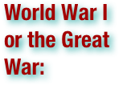

World War I (WWI), which was called the World War or the Great War from its occurrence until 1939, and the First World War or World War I thereafter, was a major war centered in Europe that began on 28 July 1914 and lasted until 11 November 1918. It involved all the world's great powers, which were assembled in two opposing alliances: the Allies (centered around the Triple Entente) and the Central Powers (originally centered around the Triple Alliance). More than 70 million military personnel, including 60 million Europeans, were mobilized in one of the largest wars in history. More than 9 million combatants were killed, largely because of great technological advances in firepower without corresponding advances in mobility. It was the sixth deadliest conflict in world history. The assassination on 28 June 1914 of Archduke Franz Ferdinand of Austria, the heir to the throne ofAustria-Hungary, was the proximate trigger of the war. Long-term causes, such as imperialistic foreign policies of the great powers of Europe, such as the German Empire, the Austro-Hungarian Empire, theOttoman Empire, the Russian Empire, the British Empire, France, and Italy, played a major role. Ferdinand's assassination by a Yugoslav nationalist resulted in a Habsburg ultimatum against the Kingdom of Serbia. Several alliances formed over the past decades were invoked, so within weeks the major powers were at war; via their colonies, the conflict soon spread around the world. On 28 July, the conflict opened with the Austro-Hungarian invasion of Serbia, followed by the German invasion of Belgium, Luxembourg and France; and a Russian attack against Germany. After the German march on Paris was brought to a halt, the Western Front settled into a static battle of attrition with a trench line that changed little until 1917. In the East, the Russian army successfully fought against the Austro-Hungarian forces but was forced back by the German army. Additional fronts opened after the Ottoman Empire joined the war in 1914, Italy and Bulgaria in 1915 and Romania in 1916. The Russian Empire collapsed in 1917, and Russia left the war after the October Revolution later that year. After a 1918 German offensive along the western front, United States forces entered the trenches and the Allies drove back the German armies in a series of successful offensives. Germany agreed to a cease-fire on 11 November 1918, later known as Armistice Day. By the war's end, four major imperial powers—the German, Russian, Austro-Hungarian and Ottoman Empires—had been militarily and politically defeated and had ceased to exist. The former two states lost a great amount of territory, while the latter two were dismantled entirely. The map of central Europe was redrawn into several smaller states. The League of Nations was formed in the hope of preventing another such conflict. The European nationalism spawned by the war and the breakup of empires, the repercussions of Germany's defeat and problems with the Treaty of Versailles are generally agreed to be factors in the beginning of World War II. (wikipedia.org. Accessed August 12-14, 2011.)

World War II, or the Second World War (often abbreviated as WWII or WW2), was a global military conflict lasting from 1939 to 1945, which involved most of the world's nations, including all of the great powers: eventually forming two opposing military alliances, the Allies and the Axis. It was the most widespread war in history, with more than 100 million military personnel mobilized. In a state of "total war," the major participants placed their entire economic, industrial, and scientific capabilities at the service of the war effort, erasing the distinction between civilian and military resources. Marked by significant events involving the mass death of civilians, including the Holocaust and the only use of nuclear weapons in warfare, it was the deadliest conflict in human history, resulting in 50 million to over 70 million fatalities. The war is generally accepted to have begun on 1 September 1939, with the invasion of Poland by Germany, and subsequent declarations of war on Germany by France and most of the countries of the British Empire and Commonwealth. Germany set out to establish a large empire in Europe. From late 1939 to early 1941, in a series of campaigns and treaties, Germany conquered or subdued much of continental Europe; amid Nazi-Soviet agreements, the nominally neutral Soviet Union fully or partially occupied and annexed territories of its six European neighbors. Britain and the Commonwealth remained the only major force continuing the fight against the Axis in North Africa and in extensive naval warfare. In June 1941, the European Axis launched an invasion of the Soviet Union, giving a start to the largest land theatre of war in history, which, from that moment on, tied down the major part of the Axis military power. In December 1941, Japan, which had been at war with China since 1937, and aimed to dominate Asia, attacked the United States and European possessions in the Pacific Ocean, quickly conquering much of the region. The Axis advance was stopped in 1942 after the defeat of Japan in a series of naval battles and after defeats of European Axis troops in North Africa and, decisively, at Stalingrad. In 1943, with a series of German defeats in Eastern Europe, the Allied invasion of Fascist Italy, and American victories in the Pacific, the Axis lost the initiative and undertook strategic retreat on all fronts. In 1944, the Western Allies invaded France, while the Soviet Union regained all territorial losses and invaded Germany and its allies. The war in Europe ended with the capture of Berlin by Soviet and Polish troops and the subsequent German unconditional surrender on 8 May 1945. The Japanese Navy was defeated by the United States, and invasion of the Japanese Archipelago ("Home Islands") became imminent. The war in Asia ended on 15 August 1945 when Japan agreed to surrender. The war ended with the total victory of the Allies over Germany and Japan in 1945. World War II altered the political alignment and social structure of the world. The United Nations (UN) was established to foster international cooperation and prevent future conflicts. The Soviet Union and the United States emerged as rival superpowers, setting the stage for the Cold War, which lasted for the next 46 years. Meanwhile, the influence of European great powers started to decline, while the decolonization of Asia and Africa began. Most countries whose industries had been damaged moved towards economic recovery. Political integration, especially in Europe, emerged as an effort to stabilize postwar relations. (wikipedia.org. Accessed August 15-17, 2011.)

The Hungarian Democratic Republic was an independent republic proclaimed after the collapse of Austria-Hungary in 1918. (wikipedia.org. Accessed August 15-17, 2011.)

The Kingdom of Italy was a state forged in 1861 by the unification of Italy under the influence of the Kingdom of Sardinia, which was its legal predecessor state. It existed until 1946 when the Italians opted for a republican constitution. . . During the time of the regime of the National Fascist Party from 1922 to its ousting in 1943, under the dictatorship of Benito Mussolini, the name often given by some historians to the Kingdom of Italy during this period is "Fascist Italy". Under fascism, the Kingdom allied with Nazi Germany in World War II until 1943. In the remaining two years of World War II, the Kingdom of Italy switched sides to the Allies after ousting Mussolini as Prime Minister and banning the Fascist party. The remnant fascist state that continued fighting against the Allies was a puppet state of Nazi Germany, the "Italian Social Republic", still led by Mussolini and his loyalist Fascists in northern Italy. Shortly after the war, civil discontent led to the Italian constitutional referendum, 1946 on whether Italy would remain a monarchy or become a republic. Italians decided to abandon the monarchy and form the Italian Republic, which is the present form of Italy today. (wikipedia.org. Accessed August 15-17, 2011.)